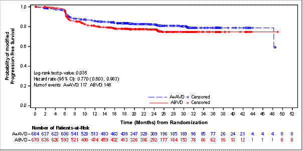
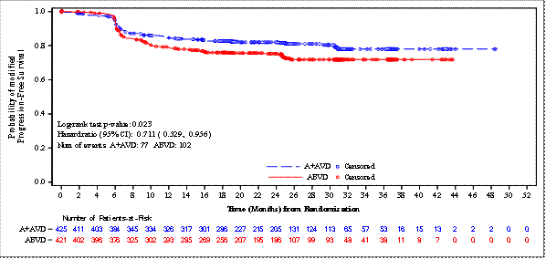
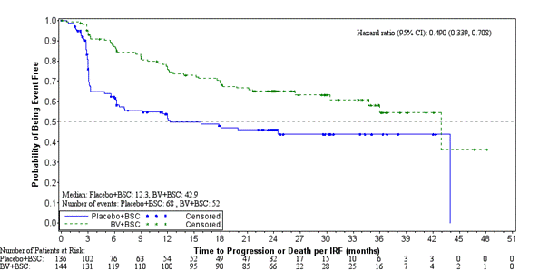
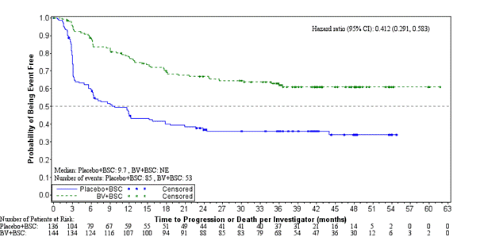
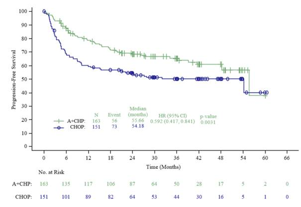
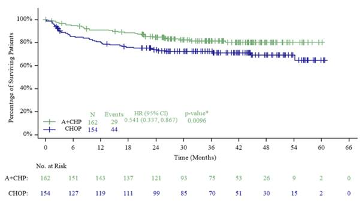
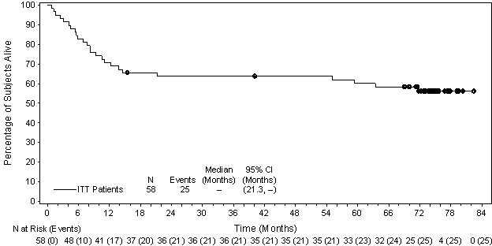

SUMMARY OF PRODUCT CHARACTERISTICS
This medicinal product is subject to additional monitoring. This will allow quick identification of new safety information. Healthcare professionals are asked to report any suspected adverse reactions. See section 4.8 for how to report adverse reactions.
ADCETRIS 50 mg powder for concentrate for solution for infusion.
Each vial contains 50 mg of brentuximab vedotin.
After reconstitution (see section 6.6), each mL contains 5 mg of brentuximab vedotin.
ADCETRIS is an antibody‑drug conjugate composed of a CD30‑directed monoclonal antibody (recombinant chimeric immunoglobulin G1 [IgG1], produced by recombinant DNA technology in Chinese Hamster ovary cells) that is covalently linked to the antimicrotubule agent monomethyl auristatin E (MMAE).
Excipient with known effect
Each vial contains approximately 13.2 mg of sodium.
For the full list of excipients, see section 6.1.
Powder for concentrate for solution for infusion.
White to off‑white cake or powder.
Hodgkin lymphoma
ADCETRIS is indicated for adult patients with previously untreated CD30+ Stage IV Hodgkin lymphoma (HL) in combination with doxorubicin, vinblastine and dacarbazine (AVD) (see sections 4.2 and 5.1).
ADCETRIS is indicated for the treatment of adult patients with CD30+ HL at increased risk of relapse or progression following autologous stem cell transplant (ASCT) (see section 5.1).
ADCETRIS is indicated for the treatment of adult patients with relapsed or refractory CD30+ Hodgkin lymphoma (HL):
1. following ASCT, or
2. following at least two prior therapies when ASCT or multi-agent chemotherapy is not a treatment option.
Systemic anaplastic large cell lymphoma
ADCETRIS in combination with cyclophosphamide, doxorubicin and prednisone (CHP) is indicated for adult patients with previously untreated systemic anaplastic large cell lymphoma (sALCL) (see section 5.1).
ADCETRIS is indicated for the treatment of adult patients with relapsed or refractory sALCL.
Cutaneous T‑cell lymphoma
ADCETRIS is indicated for the treatment of adult patients with CD30+ cutaneous T‑cell lymphoma (CTCL) after at least 1 prior systemic therapy (see section 5.1).
ADCETRIS should be administered under the supervision of a physician experienced in the use of anti‑cancer agents.
Posology
Previously Untreated HL
The recommended dose in combination with chemotherapy (doxorubicin [A], vinblastine [V] and dacarbazine [D] [AVD]) is 1.2 mg/kg administered as an intravenous infusion over 30 minutes on days 1 and 15 of each 28‑day cycle for 6 cycles (see section 5.1).
Primary prophylaxis with growth factor support (G-CSF), beginning with the first dose, is recommended for all patients with previously untreated HL receiving combination therapy (see section 4.4).
Refer to the summary of product characteristics (SmPC) of chemotherapy agents given in combination with ADCETRIS for patients with previously untreated HL.
HL at increased risk of relapse or progression
The recommended dose is 1.8 mg/kg administered as an intravenous infusion over 30 minutes every 3 weeks.
ADCETRIS treatment should start following recovery from ASCT based on clinical judgment. These patients should receive up to 16 cycles (see section 5.1).
Relapsed or refractory HL
The recommended dose is 1.8 mg/kg administered as an intravenous infusion over 30 minutes every 3 weeks.
The recommended starting dose for the retreatment of patients who have previously responded to treatment with ADCETRIS is 1.8 mg/kg administered as an intravenous infusion over 30 minutes every 3 weeks. Alternatively, treatment may be started at the last tolerated dose (see section 5.1).
Treatment should be continued until disease progression or unacceptable toxicity (see section 4.4).
Patients who achieve stable disease or better should receive a minimum of 8 cycles and up to a maximum of 16 cycles (approximately 1 year) (see section 5.1).
Previously untreated sALCL
The recommended dose in combination with chemotherapy (cyclophosphamide [C], doxorubicin [H] and prednisone [P] [CHP]) is 1.8 mg/kg administered as an intravenous infusion over 30 minutes every 3 weeks for 6 to 8 cycles (see section 5.1).
Primary prophylaxis with G-CSF, beginning with the first dose, is recommended for all patients with previously untreated sALCL receiving combination therapy (see section 4.4).
Refer to the SmPCs of chemotherapy agents given in combination with ADCETRIS for patients with previously untreated sALCL.
Relapsed or refractory sALCL
The recommended dose is 1.8 mg/kg administered as an intravenous infusion over 30 minutes every 3 weeks.
The recommended starting dose for the retreatment of patients who have previously responded to treatment with ADCETRIS is 1.8 mg/kg administered as an intravenous infusion over 30 minutes every 3 weeks. Alternatively, treatment may be started at the last tolerated dose (see section 5.1).
Treatment should be continued until disease progression or unacceptable toxicity (see section 4.4).
Patients who achieve stable disease or better should receive a minimum of 8 cycles and up to a maximum of 16 cycles (approximately 1 year) (see section 5.1).
CTCL
The recommended dose is 1.8 mg/kg administered as an intravenous infusion over 30 minutes every 3 weeks.
Patients with CTCL should receive up to 16 cycles (see section 5.1).
General
If the patient’s weight is more than 100 kg, the dose calculation should use 100 kg (see section 6.6).
Complete blood counts should be monitored prior to administration of each dose of this treatment (see section 4.4).
Patients should be monitored during and after infusion (see section 4.4).
Dose adjustments
Neutropenia
If neutropenia develops during treatment it should be managed by dose delays. See Table 1 and Table 2 for appropriate dosing recommendations for monotherapy and combination therapy, respectively (see also section 4.4).
Table 1:
Dosing recommendations for neutropenia with monotherapy
|
(signs and symptoms [abbreviated description of CTCAEa]) |
Modification of dosing schedule |
|
Grade 1 (< LLN‑1500/mm3 < LLN‑1.5 x 109/L) or Grade 2 (< 1500‑1000/mm3 < 1.5‑1.0 x 109/L) |
Continue with the same dose and schedule. |
|
Grade 3 (< 1,000‑500/mm3 < 1.0‑0.5 x 109/L) or Grade 4 (< 500/mm3 < 0.5 x 109/L) |
Withhold dose until toxicity returns to ≤ Grade 2 or baseline then resume treatment at the same dose and scheduleb. Consider G‑CSF or GM‑CSF in subsequent cycles for patients who develop Grade 3 or Grade 4 neutropenia. |
a. Grading based on National Cancer Institute (NCI) Common Terminology Criteria for Adverse Events (CTCAE) v3.0; see Neutrophils/granulocytes; LLN = lower limit of normal.
b. Patients who develop Grade 3 or Grade 4 lymphopenia may continue treatment without interruption.
Table 2: Dosing recommendations for neutropenia during combination therapy
|
Severity grade of neutropenia (signs and symptoms [abbreviated description of CTCAEa]) |
Modification of dosing schedule |
|
Grade 1 (< LLN‑1500/mm3 < LLN‑1.5 x 109/L) or Grade 2 (< 1500‑1000/mm3 < 1.5‑1.0 x 109/L) Grade 3 (< 1,000‑500/mm3 < 1.0‑0.5 x 109/L) or Grade 4 (< 500/mm3 < 0.5 x 109/L) |
Primary prophylaxis with G-CSF, beginning with the first dose, is recommended for all patients receiving combination therapy. Continue with the same dose and schedule. |
a. Grading based on National Cancer Institute (NCI) Common Terminology Criteria for Adverse Events (CTCAE) v4.03; see Neutrophils/granulocytes; LLN = lower limit of normal.
Peripheral neuropathy
If peripheral sensory or motor neuropathy emerges or worsens during treatment see Table 3 and 4 for appropriate dosing recommendations for monotherapy and combination therapy, respectively (see section 4.4).
Table 3: Dosing recommendations for new or worsening peripheral sensory or motor neuropathy with monotherapy
|
Severity of peripheral sensory or motor neuropathy (signs and symptoms [abbreviated description of CTCAEa]) |
Modification of dose and schedule |
|
Grade 1 (paraesthesia and/or loss of reflexes, with no loss of function) |
Continue with the same dose and schedule. |
|
Grade 2 (interfering with function but not with activities of daily living)
|
Withhold dose until toxicity returns to ≤ Grade 1 or baseline, then restart treatment at a reduced dose of 1.2 mg/kg up to a maximum of 120 mg every 3 weeks. |
|
Grade 3 (interfering with activities of daily living) |
Withhold dose until toxicity returns to ≤ Grade 1 or baseline, then restart treatment at a reduced dose of 1.2 mg/kg up to a maximum of 120 mg every 3 weeks. |
|
Grade 4 (sensory neuropathy that is disabling or motor neuropathy that is life threatening or leads to paralysis) |
Discontinue treatment. |
a. Grading based on National Cancer Institute (NCI) Common Terminology Criteria for Adverse Events (CTCAE) v3.0; see neuropathy: motor; neuropathy: sensory; and neuropathic pain.
Table 4: Dosing recommendations for new or worsening peripheral sensory or motor neuropathy during combination therapy
|
|
Combination therapy with AVD |
Combination therapy with CHP |
|
Severity of peripheral sensory or motor neuropathy (signs and symptoms [abbreviated description of CTCAEa]) |
Modification of dose and schedule |
Modification of dose and schedule |
|
Grade 1 (paraesthesia and/or loss of reflexes, with no loss of function) |
Continue with the same dose and schedule. |
Continue with the same dose and schedule. |
|
Grade 2 (interfering with function but not with activities of daily living) |
Reduce dose to 0.9 mg/kg up to a maximum of 90 mg every 2 weeks. |
Sensory neuropathy: Continue treatment at same dose level. Motor neuropathy: Reduce dose to 1.2 mg/kg, up to a maximum of 120 mg every 3 weeks. |
|
Grade 3 (interfering with activities of daily living) |
Withhold treatment with ADCETRIS until toxicity is ≤ Grade 2, then restart treatment at a reduced dose to 0.9 mg/kg up to a maximum of 90 mg every 2 weeks. |
Sensory neuropathy: Reduce dose to 1.2 mg/kg up to a maximum of 120 mg every 3 weeks. Motor neuropathy: Discontinue treatment. |
|
Grade 4 (sensory neuropathy which is disabling or motor neuropathy that is life threatening or leads to paralysis) |
Discontinue treatment. |
Discontinue treatment. |
a. Grading based on National Cancer Institute (NCI) Common Terminology Criteria for Adverse Events (CTCAE) v4.03; see neuropathy: motor; neuropathy: sensory; and neuropathic pain.
Special patient populations
Renal and hepatic impairment
Combination therapy
Patients with renal impairment should be closely monitored for adverse events. There is no clinical trial experience using ADCETRIS in combination with chemotherapy in patients with renal impairment, where serum creatinine is ≥ 2.0 mg/dL and/or creatinine clearance or calculated creatinine clearance is ≤ 40 mL/minute. Use of ADCETRIS in combination with chemotherapy should be avoided in patients with severe renal impairment.
Patients with hepatic impairment should be closely monitored for adverse events. The recommended starting dose in patients with mild hepatic impairment receiving ADCETRIS in combination with AVD is 0.9 mg/kg administered as an intravenous infusion over 30 minutes every 2 weeks. The recommended starting dose in patients with mild hepatic impairment receiving ADCETRIS in combination with CHP is 1.2 mg/kg administered as an intravenous infusion over 30 minutes every 3 weeks. There is no clinical trial experience using ADCETRIS in combination with chemotherapy in patients with hepatic impairment, where total bilirubin is > 1.5 times the upper limit of normal (ULN) (unless due to Gilbert syndrome), or aspartate aminotransferase (AST) or alanine aminotransferase (ALT) are > 3 times the ULN, or > 5 times the ULN if their elevation may be reasonably ascribed to the presence of HL in the liver. Use of ADCETRIS in combination with chemotherapy should be avoided in patients with moderate and severe hepatic impairment.
Monotherapy
The recommended starting dose in patients with severe renal impairment is 1.2 mg/kg administered as an intravenous infusion over 30 minutes every 3 weeks. Patients with renal impairment should be closely monitored for adverse events (see section 5.2).
The recommended starting dose in patients with hepatic impairment is 1.2 mg/kg administered as an intravenous infusion over 30 minutes every 3 weeks. Patients with hepatic impairment should be closely monitored for adverse events (see section 5.2).
Elderly
The dosing recommendations for patients aged 65 and older are the same as for adults. Currently available data are described in sections 4.8, 5.1 and 5.2.
Paediatric population
The safety and efficacy of ADCETRIS in children less than 18 years have not yet been established. Currently available data are described in sections 4.8, 5.1 and 5.2 but no recommendation on a posology can be made.
In nonclinical studies, thymus depletion has been observed (see section 5.3).
Method of administration
The recommended dose of ADCETRIS is infused over 30 minutes.
For instructions on reconstitution and dilution of the medicinal product before administration, see section 6.6.
ADCETRIS must not be administered as an intravenous push or bolus. ADCETRIS should be administered through a dedicated intravenous line and it must not be mixed with other medicinal products (see section 6.2).
Hypersensitivity to the active substance or to any of the excipients listed in section 6.1.
Combined use of bleomycin and ADCETRIS causes pulmonary toxicity (see section 4.5).
Progressive multifocal leukoencephalopathy
John Cunningham virus (JCV) reactivation resulting in progressive multifocal leukoencephalopathy (PML) and death can occur in ADCETRIS‑treated patients. PML has been reported in patients who received this treatment after receiving multiple prior chemotherapy regimens. PML is a rare demyelinating disease of the central nervous system that results from reactivation of latent JCV and is often fatal.
Patients should be closely monitored for new or worsening neurological, cognitive, or behavioural signs or symptoms, which may be suggestive of PML. ADCETRIS should be held for any suspected case of PML. Suggested evaluation of PML includes neurology consultation, gadolinium‑enhanced magnetic resonance imaging of the brain and cerebrospinal fluid analysis for JCV DNA by polymerase chain reaction or a brain biopsy with evidence of JCV. A negative JCV PCR does not exclude PML. Additional follow up and evaluation may be warranted if no alternative diagnosis can be established. ADCETRIS dosing should be permanently discontinued if a diagnosis of PML is confirmed.
The physician should be particularly alert to symptoms suggestive of PML that the patient may not notice (e.g., cognitive, neurological, or psychiatric symptoms).
Pancreatitis
Acute pancreatitis has been observed in patients treated with ADCETRIS. Fatal outcomes have been reported.
Patients should be closely monitored for new or worsening abdominal pain, which may be suggestive of acute pancreatitis. Patient evaluation may include physical examination, laboratory evaluation for serum amylase and serum lipase, and abdominal imaging, such as ultrasound and other appropriate diagnostic measures. ADCETRIS should be held for any suspected case of acute pancreatitis. ADCETRIS should be discontinued if a diagnosis of acute pancreatitis is confirmed.
Pulmonary toxicity
Cases of pulmonary toxicity, including pneumonitis, interstitial lung disease, and acute respiratory distress syndrome (ARDS), some with fatal outcomes, have been reported in patients receiving ADCETRIS. Although a causal association with ADCETRIS has not been established, the risk of pulmonary toxicity cannot be ruled out. In the event of new or worsening pulmonary symptoms (e.g. cough, dyspnoea), a prompt diagnostic evaluation should be performed and patients should be treated appropriately. Consider holding ADCETRIS dosing during evaluation and until symptomatic improvement.
Serious infections and opportunistic infections
Serious infections such as pneumonia, staphylococcal bacteraemia, sepsis/septic shock (including fatal outcomes) and herpes zoster, cytomegalovirus (CMV) (reactivation) and opportunistic infections such as Pneumocystis jiroveci pneumonia and oral candidiasis have been reported in patients treated with ADCETRIS. Patients should be carefully monitored during treatment for the emergence of possible serious and opportunistic infections.
Infusion‑related reactions
Immediate and delayed infusion‑related reactions (IRR), as well as anaphylactic reactions, have been reported.
Patients should be carefully monitored during and after infusion. If an anaphylactic reaction occurs, administration of ADCETRIS should be immediately and permanently discontinued and appropriate medical therapy should be administered.
If an IRR occurs, the infusion should be interrupted and appropriate medical management instituted. The infusion may be restarted at a slower rate after symptom resolution. Patients who have experienced a prior IRR should be premedicated for subsequent infusions. Premedication may include paracetamol, an antihistamine and a corticosteroid.
IRRs are more frequent and more severe in patients with antibodies to brentuximab vedotin (see section 4.8).
Tumour lysis syndrome
Tumour lysis syndrome (TLS) has been reported with ADCETRIS. Patients with rapidly proliferating tumour and high tumour burden are at risk of tumour lysis syndrome. These patients should be monitored closely and managed according to best medical practice. Management of TLS may include aggressive hydration, monitoring of renal function, correction of electrolyte abnormalities, anti‑hyperuricaemic therapy, and supportive care.
Peripheral neuropathy
ADCETRIS may cause peripheral neuropathy, both sensory and motor. ADCETRIS‑induced peripheral neuropathy is typically an effect of cumulative exposure to this medicinal product and is reversible in most cases. In clinical trials, the majority of patients had resolution or improvement of their symptoms (see section 4.8). Patients should be monitored for symptoms of neuropathy, such as hypoesthesia, hyperesthesia, paraesthesia, discomfort, a burning sensation, neuropathic pain or weakness. Patients experiencing new or worsening peripheral neuropathy may require a delay and a dose reduction of ADCETRIS or discontinuation of treatment (see section 4.2).
Haematological toxicities
Grade 3 or Grade 4 anaemia, thrombocytopenia, and prolonged (≥ 1 week) Grade 3 or Grade 4 neutropenia can occur with ADCETRIS. Complete blood counts should be monitored prior to administration of each dose. If Grade 3 or Grade 4 neutropenia develops, refer to section 4.2.
Febrile neutropenia
Febrile neutropenia (fever of unknown origin without clinically or microbiologically documented infection with an absolute neutrophil count < 1.0 x 109/L, fever ≥ 38.5 0C; ref CTCAE v3) has been reported with treatment with ADCETRIS. Complete blood counts should be monitored prior to administration of each dose of treatment. Patients should be monitored closely for fever and managed according to best medical practice if febrile neutropenia develops.
In combination therapy with AVD or CHP, advanced age was a risk factor for febrile neutropenia. When ADCETRIS is administered in combination with AVD or CHP, primary prophylaxis with G‑CSF, beginning with the first dose, is recommended for all patients regardless of age.
Stevens‑Johnson syndrome and toxic epidermal necrolysis
Stevens‑Johnson syndrome (SJS) and toxic epidermal necrolysis (TEN) have been reported with ADCETRIS. Fatal outcomes have been reported. If SJS or TEN occur, ADCETRIS should be discontinued and appropriate medical therapy should be administered.
Gastrointestinal complications
Gastrointestinal (GI) complications including intestinal obstruction, ileus, enterocolitis, neutropenic colitis, erosion, ulcer, perforation and haemorrhage, some with fatal outcomes, have been reported in patients treated with ADCETRIS. In the event of new or worsening GI symptoms, perform a prompt diagnostic evaluation and treat appropriately.
Hepatotoxicity
Hepatotoxicity in the form of elevations in alanine aminotransferase (ALT) and aspartate aminotransferase (AST) has been reported with ADCETRIS. Serious cases of hepatotoxicity, including fatal outcomes, have also occurred. Pre‑existing liver disease, comorbidities, and concomitant medications may also increase the risk. Liver function should be tested before initiating the treatment and routinely monitored in patients receiving ADCETRIS. Patients experiencing hepatotoxicity may require a delay, change in dose or discontinuation of ADCETRIS.
Hyperglycaemia
Hyperglycaemia has been reported during clinical trials in patients with an elevated Body Mass Index (BMI) with or without a history of diabetes mellitus. However, any patient who experiences an event of hyperglycaemia should have their serum glucose closely monitored. Anti‑diabetic treatment should be administered as appropriate.
Renal and hepatic impairment
There is limited experience in patients with renal and hepatic impairment. Available data indicate that MMAE clearance might be affected by severe renal impairment, hepatic impairment, and by low serum albumin concentrations (see section 5.2).
CD30+ CTCL
The size of the treatment effect in CD30 + CTCL subtypes other than mycosis fungoides (MF) and primary cutaneous anaplastic large cell lymphoma (pcALCL) is not clear due to lack of high level evidence. In two single arm phase II studies of ADCETRIS, disease activity has been shown in the subtypes Sézary syndrome (SS), lymphomatoid papulosis (LyP) and mixed CTCL histology. These data suggest that efficacy and safety can be extrapolated to other CTCL CD30+ subtypes. Nevertheless, ADCETRIS should be used with caution in other CD30+ CTCL patients after careful consideration of the potential benefit‑risk on an individual basis (see section 5.1).
Sodium content in excipients
This medicinal product contains 13.2 mg sodium per vial, equivalent to 0.7% of the WHO recommended maximum daily intake of 2 g sodium for an adult.
Traceability
In order to improve the traceability of biological medicinal products, the name and the batch number of the administered product should be clearly recorded.
Interaction with medicinal products metabolised through CYP3A4 route (CYP3A4 inhibitors/inducers)
Co‑administration of brentuximab vedotin with ketoconazole, a strong CYP3A4 and P‑gp inhibitor, increased the exposure to the antimicrotubule agent MMAE by approximately 73%, and did not alter the plasma exposure to brentuximab vedotin. Therefore, co‑administration of brentuximab vedotin with strong CYP3A4 and P‑gp inhibitors may increase the incidence of neutropenia. If neutropenia develops, refer to Tables 1 and 2 for dosing recommendations for neutropenia (see section 4.2).
Co‑administration of brentuximab vedotin with rifampicin, a strong CYP3A4 inducer, did not alter the plasma exposure to brentuximab vedotin. Though PK data are limited, co-administration of rifampicin appeared to reduce plasma concentrations of MMAE metabolites that could be assayed.
Co‑administration of midazolam, a CYP3A4 substrate, with brentuximab vedotin did not alter the metabolism of midazolam; therefore brentuximab vedotin is not expected to alter the exposure to medicines that are metabolised by CYP3A4 enzymes.
Doxorubicin, vinblastine and dacarbazine (AVD)
The serum and plasma pharmacokinetic characteristics of antibody drug conjugate (ADC) and MMAE respectively following administration of brentuximab vedotin in combination with AVD were similar to that in monotherapy.
Co‑administration of brentuximab vedotin did not affect the plasma exposure of AVD.
Cyclophosphamide, Doxorubicin and Prednisone (CHP)
The serum and plasma pharmacokinetic characteristics of ADC and MMAE, respectively, following administration of brentuximab vedotin in combination with CHP were similar to that in monotherapy.
Co‑administration of brentuximab vedotin is not expected to affect the exposure of CHP.
Bleomycin
There were no formal drug‑drug interaction studies with brentuximab vedotin and bleomycin (B). In a phase 1 dose finding and safety study (SGN35‑009), unacceptable pulmonary toxicity (including 2 fatal events) was noted in 11 of 25 patients (44%) treated with brentuximab vedotin plus ABVD. No pulmonary toxicity or fatal events were reported with brentuximab vedotin + AVD. Therefore, co‑administration of ADCETRIS with bleomycin is contraindicated (see section 4.3).
Women of childbearing potential
Women of childbearing potential should be using two methods of effective contraception during treatment with ADCETRIS and until 6 months after treatment.
Pregnancy
There are no data from the use of ADCETRIS in pregnant women. Studies in animals have shown reproductive toxicity (see section 5.3).
ADCETRIS should not be used during pregnancy unless the benefit to the mother outweighs the potential risks to the foetus. If a pregnant woman needs to be treated she should be clearly advised on the potential risk to the foetus.
See the fertility section below pertaining to advice for women whose male partners are being treated with ADCETRIS.
Breast‑feeding
There are no data as to whether brentuximab vedotin or its metabolites are excreted in human milk.
A risk to the newborn/infant cannot be excluded.
A decision should be made whether to discontinue breast‑feeding or to discontinue/abstain from this therapy, taking into account a potential risk of breast‑feeding for the child and the benefit of therapy for the woman.
Fertility
In non‑clinical studies, brentuximab vedotin treatment has resulted in testicular toxicity, and may alter male fertility. MMAE has been shown to have aneugenic properties (see section 5.3). Therefore, men being treated with this medicine are advised to have sperm samples frozen and stored before treatment. Men being treated with this medicine are advised not to father a child during treatment and for up to 6 months following the last dose.
ADCETRIS may have a moderate influence on the ability to drive and use machines (e.g. dizziness), see section 4.8.
Summary of the safety profile
The safety profile of ADCETRIS is based on available clinical trial data, the Named Patient Program (NPP), and post‑marketing experience to date. Frequencies of adverse reactions described below and in Table 5 have been determined based on data generated from clinical studies.
Monotherapy
In the pooled dataset of ADCETRIS as monotherapy across HL, sALCL and CTCL studies (SG035‑0003, SG035‑0004, SGN35‑005, SGN35‑006, C25001 and C25007, see section 5.1) the most frequent adverse reactions (≥ 10%) were infections, peripheral sensory neuropathy, nausea, fatigue, diarrhoea, pyrexia, upper respiratory tract infection, neutropenia, rash, cough, vomiting, arthralgia, peripheral motor neuropathy, infusion-related reactions, pruritus, constipation, dyspnoea, weight decreased, myalgia and abdominal pain.
Serious adverse drug reactions occurred in 12% of patients. The frequency of unique serious adverse drug reactions was ≤ 1%.
Adverse events led to treatment discontinuation in 24% of patients receiving ADCETRIS.
The safety data in patients retreated with ADCETRIS (SGN35‑006, see section 5.1) were consistent with those observed in the combined pivotal phase 2 studies, with the exception of peripheral motor neuropathy, which had a higher incidence (28% vs. 9% in the pivotal phase 2 studies) and was primarily Grade 2. Patients also had a higher incidence of arthralgia, Grade 3 anaemia, and back pain compared to patients observed in the combined pivotal phase 2 studies.
The safety data in patients with relapsed or refractory HL who had not received an autologous stem cell transplant and were treated with the recommended dose of 1.8 mg/kg every three weeks in a single‑arm phase 4 study (n = 60), the phase 1 dose escalation and clinical pharmacology studies (n = 15 patients) and in the NPP (n = 26 patients) (see section 5.1) were consistent with the safety profile of the pivotal clinical studies.
Combination therapy
For safety information of chemotherapy agents given in combination with ADCETRIS (doxorubicin, vinblastine and dacarbazine (AVD) or cyclophosphamide, doxorubicin and prednisone (CHP)), refer to their summary of product characteristics.
In the studies of ADCETRIS as combination therapy in 662 patients with previously untreated advanced HL (C25003) and 223 patients with previously untreated CD30+ peripheral T-cell lymphoma (PTCL) (SGN35‑014), the most common adverse reactions (≥ 10%) were: infections, neutropenia, peripheral sensory neuropathy, nausea, constipation, vomiting, diarrhoea, fatigue, pyrexia, alopecia, anaemia, weight decreased, stomatitis, febrile neutropenia, abdominal pain, decreased appetite, insomnia, bone pain, rash, cough, dyspnoea, arthralgia, myalgia, back pain, peripheral motor neuropathy, upper respiratory tract infection, and dizziness.
In patients receiving ADCETRIS combination therapy, serious adverse reactions occurred in 34% of patients. Serious adverse reactions occurring in ≥ 3% of patients included febrile neutropenia (15%), pyrexia (5%), and neutropenia (3%).
Adverse events led to treatment discontinuation in 10% of patients. Adverse events that led to treatment discontinuation in ≥ 2% of patients included peripheral sensory neuropathy, and peripheral neuropathy.
Tabulated list of adverse reactions
Adverse reactions for ADCETRIS are listed by MedDRA System Organ Class and Preferred Term (see Table 5). Within each System Organ Class, adverse reactions are listed under frequency categories of: Very common (≥ 1/10); Common (≥ 1/100 to < 1/10); Uncommon (≥ 1/1,000 to < 1/100); Rare (≥ 1/10,000 to < 1/1,000); Very rare (< 1/10,000); not known (cannot be estimated from the available data). Within each frequency grouping, adverse reactions are presented in the order of decreasing seriousness.
Table 5:
Adverse reactions to ADCETRIS
|
Adverse reactions (monotherapy) |
Adverse reactions |
|
|
Infections and infestations |
||
|
Very common: |
Infectiona, upper respiratory tract infection |
Infectiona, upper respiratory tract infection |
|
Common: |
Herpes zoster, pneumonia, herpes simplex, oral candidiasis |
Pneumonia, oral candidiasis, sepsis/septic shock, herpes zoster |
|
Uncommon: |
Pneumocystis jiroveci pneumonia, staphylococcal bacteraemia, cytomegalovirus infection or reactivation, sepsis/septic shock |
Herpes simplex, Pneumocystis jiroveci pneumonia |
|
Frequency not known: |
Progressive multifocal leukoencephalopathy |
|
|
Blood and lymphatic system disorders |
||
|
Very common: |
Neutropenia |
Neutropeniaa, anaemia, febrile neutropenia |
|
Common: |
Anaemia, thrombocytopenia |
Thrombocytopenia |
|
Uncommon: |
Febrile neutropenia |
|
|
Immune system disorders |
||
|
Uncommon: |
Anaphylactic reaction |
Anaphylactic transfusion reaction |
|
Metabolism and nutrition disorders |
||
|
Very common: |
|
Decreased appetite |
|
Common: |
Hyperglycaemia |
Hyperglycaemia |
|
Uncommon: |
Tumour lysis syndrome |
Tumour lysis syndrome |
|
Psychiatric disorders |
||
|
Very common: |
|
Insomnia |
|
Nervous system disorders |
||
|
Very common: |
Peripheral sensory neuropathy, peripheral motor neuropathy |
Peripheral sensory neuropathya, peripheral motor neuropathya, dizziness |
|
Common: |
Dizziness |
|
|
Uncommon: |
Demyelinating polyneuropathy |
|
|
Respiratory, thoracic and mediastinal disorders |
||
|
Very common: |
Cough, dyspnoea |
Cough, dyspnoea |
|
Gastrointestinal disorders |
||
|
Very common: |
Nausea, diarrhoea, vomiting, constipation, abdominal pain |
Nausea, constipation, vomiting, diarrhoea, abdominal pain, stomatitis |
|
Uncommon: |
Pancreatitis acute |
Pancreatitis acute |
|
Hepatobiliary disorders |
||
|
Common: |
Alanine aminotransferase/aspartate aminotransferase (ALT/AST) increased |
Alanine aminotransferase/aspartate aminotransferase (ALT/AST) increased |
|
Skin and subcutaneous tissue disorders |
||
|
Very common: |
Rasha, pruritus |
Alopecia, rasha |
|
Common: |
Alopecia |
Pruritus |
|
Uncommon: |
Stevens-Johnson syndrome/toxic epidermal necrolysis |
Stevens-Johnson syndromeb |
|
Musculoskeletal and connective tissue disorders |
||
|
Very common: |
Arthralgia, myalgia |
Bone pain, arthralgia, myalgia, back pain |
|
Common: |
Back pain |
|
|
General disorders and administration site conditions |
||
|
Very common: |
Fatigue, pyrexia, infusion-related reactionsa |
Fatigue, pyrexia |
|
Common: |
Chills |
Infusion-related reactionsa, chills |
|
Investigations |
||
|
Very common: |
Weight decreased |
Weight decreased |
a. Represents pooling of preferred terms.
b. Toxic epidermal necrolysis was not reported in the combination therapy setting.
Description of selected adverse reactions
Neutropenia and febrile neutropenia
Monotherapy
In clinical trials, neutropenia led to dose delays in 14% of patients. Grade 3 neutropenia was reported in 13% and Grade 4 neutropenia was reported in 5% of patients. No patients required dose reduction or discontinued treatment for neutropenia.
Severe and prolonged (≥ 1 week) neutropenia can occur with this treatment which may increase the risk of patients developing serious infections. Febrile neutropenia reported in < 1% of the patients (see section 4.2).
In the pivotal phase 2 population (SG035‑0003 and SG035‑0004), the median duration of Grade 3 or Grade 4 neutropenia was limited (1 week); 2% of patients had Grade 4 neutropenia that lasted ≥ 7 days. Less than half of the patients in the pivotal phase 2 population with Grade 3 or Grade 4 neutropenia had temporally associated infections, and the majority of temporally associated infections were Grade 1 or Grade 2.
Combination therapy
In the clinical trials of ADCETRIS as combination therapy, neutropenia led to dose delays in 19% of patients. Grade 3 neutropenia was reported in 17% and Grade 4 neutropenia was reported in 41% of patients. Two percent of patients required dose reduction and < 1% discontinued one of more of the study drugs due to neutropenia.
Febrile neutropenia was reported in 20% of the patients who did not receive primary prophylaxis with G-CSF (see section 4.2). The frequency of febrile neutropenia was 13% in patients who received primary prophylaxis with G-CSF.
Serious infections and opportunistic infections
Monotherapy
In clinical trials, serious infections and opportunistic infections occurred in 10% of patients, sepsis or septic shock occurred in < 1% of the patients. The most commonly reported opportunistic infections were herpes zoster and herpes simplex.
Combination therapy
In the clinical trials of ADCETRIS as combination therapy, serious infections including opportunistic infections occurred in 15% of patients; sepsis, neutropenic sepsis, septic shock or bacteraemia occurred in 4% of the patients. The most commonly reported opportunistic infections were herpes viral infections.
Peripheral neuropathy
Monotherapy
In clinical trials treatment emergent neuropathy occurred in 59% of the population, peripheral motor neuropathy occurred in 14% of patients. Peripheral neuropathy led to treatment discontinuation in 15%, dose reductions in 15%, and dose delays in 17% of patients. For patients who experienced peripheral neuropathy the median time of onset of peripheral neuropathy was 12 weeks. The median duration of treatment for patients who discontinued due to peripheral neuropathy was 12 cycles.
Among patients who experienced peripheral neuropathy in the pivotal phase 2 studies (SG035-0003 and SG035‑0004) and randomised phase 3 monotherapy studies (SGN35‑005 and C25001), the median follow up time from end of treatment until last evaluation ranged from 48.9 to 98 weeks. At the time of last evaluation, most of the patients (82-85%) who experienced peripheral neuropathy had resolution or improvement of their peripheral neuropathy symptoms. The median time from onset to resolution or improvement for all events ranged from 16 to 23.4 weeks.
In patients with relapsed or refractory HL or sALCL who were retreated with ADCETRIS (SGN35‑006), the majority of patients (80%) also had improvement or resolution of their peripheral neuropathy symptoms at the time of last evaluation.
In the clinical trial of ADCETRIS as combination therapy with AVD, treatment emergent neuropathy occurred in 67% of the population; peripheral motor neuropathy occurred in 11% of patients. Peripheral neuropathy led to treatment discontinuation in 7%, dose reductions in 21%, and dose delays in 1% of patients. For patients who experienced peripheral neuropathy the median time of onset of peripheral neuropathy was 8 weeks. Patients who discontinued due to peripheral neuropathy received a median of 8 doses of ADCETRIS+AVD (A+AVD) before discontinuation of one or more agents.
Among patients who experienced peripheral neuropathy, the median follow up time from end of treatment until last evaluation was approximately 91 weeks. At the time of last evaluation, most of the patients (76%) who experienced peripheral neuropathy had resolution or improvement of their peripheral neuropathy symptoms. The median time from onset to resolution or improvement of peripheral neuropathy events was 10 weeks (ranged from 0 weeks to 139 weeks).
In the clinical trial of ADCETRIS as combination therapy with CHP, treatment emergent neuropathy occurred in 52% of the population; peripheral motor neuropathy occurred in 9% of patients. Peripheral neuropathy led to treatment discontinuation in 1%, dose reductions in 7% and dose delays in <1% of patients. For patients who experienced peripheral neuropathy the median time of onset was 9.1 weeks. Patients who discontinued due to peripheral neuropathy received a median of 5 doses of ADCETRIS + CHP (A+CHP) before discontinuation of one or more agents.
Among patients who experienced peripheral neuropathy, the median follow up time from end of treatment until last evaluation was approximately 177 weeks. At the time of last evaluation, 64% who experienced peripheral neuropathy had resolution or improvement of their peripheral neuropathy symptoms. The median time from onset to resolution or improvement of peripheral neuropathy events was 19.0 weeks (ranged from 0 weeks to 205 weeks).
Infusion-related reactions
Monotherapy
IRRs, such as headache, rash, back pain, vomiting, chills, nausea, dyspnoea, pruritus and cough were reported in 13% of patients. Anaphylactic reactions have been reported (see section 4.4). Symptoms of an anaphylactic reaction may include, but are not limited to, urticaria, angioedema, hypotension and bronchospasm.
Combination therapy
IRRs, such as headache, rash, back pain, vomiting, chills, nausea, dyspnoea, pruritus, cough, infusion site pain and pyrexia were reported in 8% of patients. Anaphylactic reactions have been reported (see section 4.4). Symptoms of an anaphylactic reaction may include, but are not limited to, urticaria, angioedema, hypotension and bronchospasm.
Immunogenicity
In clinical trials, patients were periodically tested for antibodies to brentuximab vedotin using a sensitive electrochemiluminescent immunoassay. There was a higher incidence of infusion-related reactions observed in patients with antibodies to brentuximab vedotin relative to patients who tested transiently positive or negative.
The presence of antibodies to brentuximab vedotin did not correlate with a clinically meaningful reduction in serum brentuximab vedotin levels and did not result in a decrease in the efficacy of brentuximab vedotin. While the presence of antibodies to brentuximab vedotin does not necessarily predict the development of an IRR, there was a higher incidence of IRRs observed in patients with persistently positive anti-drug antibodies (ADA) relative to patients with transiently positive ADA and never positive ADA.
There was a trend of increased clearance of brentuximab vedotin in paediatric patients confirmed positive for ADAs. No patients aged < 12 years (0 of 11) and 2 patients aged ≥ 12 years (2 of 23) became persistently ADA positive.
Paediatric population
Safety was evaluated in a phase 1/2 study in paediatric patients aged 7‑17 years of age (n = 36) with relapsed or refractory (r/r) HL and sALCL (see section 5.1). In this study in 36 patients, no new safety concerns were reported.
Elderly
Monotherapy
The safety profile in elderly patients is generally in line with that of adult patients. However, elderly patients may be more susceptible to events such as pneumonia, neutropenia and febrile neutropenia.
Combination therapy
In older patients (≥ 60 years of age; n = 186 [21%]), the incidence of adverse events was similar across treatment arms. More serious adverse events and dose modifications (including dose delays, reductions, and discontinuations) were reported in the older patients compared with the overall study population. Advanced age was a risk factor for febrile neutropenia in patients in both arms. Older patients who received G-CSF primary prophylaxis had lower incidence of neutropenia and febrile neutropenia than those who did not receive G-CSF primary prophylaxis.
Reporting of suspected adverse reactions
Reporting suspected adverse reactions after authorisation of the medicinal product is important. It allows continued monitoring of the benefit/risk balance of the medicinal product. Healthcare professionals are asked to report any suspected adverse reactions via the national reporting system listed in Appendix V.
There is no known antidote for overdose of ADCETRIS. In case of overdose, the patient should be closely monitored for adverse reactions, particularly neutropenia, and supportive treatment should be administered (see section 4.4).
Pharmacotherapeutic group: Antineoplastic agents; other antineoplastic agents; monoclonal antibodies, ATC code: L01XC12.
Mechanism of action
Brentuximab vedotin is an ADC that delivers an antineoplastic agent that results in apoptotic cell death selectively in CD30‑expressing tumour cells. Nonclinical data suggest that the biological activity of brentuximab vedotin results from a multi-step process. Binding of the ADC to CD30 on the cell surface initiates internalisation of the ADC‑CD30 complex, which then traffics to the lysosomal compartment. Within the cell, a single defined active species, MMAE, is released via proteolytic cleavage. Binding of MMAE to tubulin disrupts the microtubule network within the cell, induces cell cycle arrest and results in apoptotic death of the CD30‑expressing tumour cell.
Classical HL, sALCL and subtypes of CTCL (including MF and pcALCL) express CD30 as an antigen on the surface of their malignant cells. This expression is independent of disease stage, line of therapy or transplant status. These features make CD30 a target for therapeutic intervention. Because of the CD30‑targeted mechanism of action brentuximab vedotin is able to overcome chemo-resistance as CD30 is consistently expressed in patients who are refractory to multi-agent chemotherapy, irrespective of prior transplant status. The CD30‑targeted mechanism of action of brentuximab vedotin, the consistent expression of CD30 throughout the classical HL, sALCL and CD30+ CTCL disease and therapeutic spectrums and clinical evidence in CD30‑positive malignancies following multiple lines of treatment provide a biologic rationale for its use in patients with relapsed and refractory classical HL, sALCL with or without prior ASCT and CD30+ CTCL after at least 1 prior systemic therapy.
Contributions to the mechanism of action by other antibody associated functions have not been excluded.
Pharmacodynamic effects
Cardiac electrophysiology
Forty‑six (46) patients with CD30‑expressing haematologic malignancies were evaluable of the 52 patients who received 1.8 mg/kg of brentuximab vedotin every 3 weeks as part of a phase 1, single‑arm, open-label, multicenter cardiac safety study. The primary objective was to evaluate the effect of brentuximab vedotin on cardiac ventricular re-polarization and the predefined primary analysis was the change in QTc from baseline to multiple time points in Cycle 1.
The upper 90% confidence interval (CI) around the mean effect on QTc was < 10 msec at each of the Cycle 1 and Cycle 3 post-baseline time points. These data indicate the absence of clinically relevant QT prolongation due to brentuximab vedotin administered at a dose of 1.8 mg/kg every 3 weeks in patients with CD30‑expressing malignancies.
Clinical efficacy and safety
Hodgkin lymphoma
Study C25003
The efficacy and safety of ADCETRIS were evaluated in a randomised, open-label, 2‑arm, multicenter trial in 1334 patients with previously untreated advanced HL in combination with chemotherapy (doxorubicin [A], vinblastine [V] and dacarbazine [D] [AVD]). All patients had a histologically confirmed CD30‑expressing disease. Sixty‑two percent of patients had extranodal site involvement. Of the 1334 patients, 664 patients were randomised to the ADCETRIS + AVD arm and 670 patients were randomised to the ABVD (doxorubicin [A], bleomycin [B], vinblastine [V] and dacarbazine [D]) arm and stratified by number of International Prognostic Factor Project (IPFP) risk factors and region. Patients were treated on days 1 and 15 of each 28‑day cycle with 1.2 mg/kg of ADCETRIS administered as an intravenous infusion over 30 minutes + doxorubicin 25 mg/m2, vinblastine 6 mg/m2, and dacarbazine 375 mg/m2. The median number of cycles received was 6 (range, 1 to 6 cycles). Table 6 provides a summary of the baseline patient and disease characteristics. There were no relevant differences in the patient and disease characteristics between the two arms.
Table 6:
Summary of baseline patient and disease characteristics in the phase 3 previously
untreated HL study
|
Patient Characteristics |
ADCETRIS + AVD n = 664 |
ABVD n = 670 |
|
Median age (range) |
35 years (18‑82) |
37 years (18‑83) |
|
Patients ≥ 65 years old n (%) |
60 (9) |
62 (9) |
|
Gender, n (%) |
378M (57) 286F (43) |
398M (59) 272F (41) |
|
ECOG status, n (%) |
||
|
0 |
376 (57) |
378 (57) |
|
1 |
260 (39) |
263 (39) |
|
2 |
28 (4) |
27 (4) |
|
Missing |
0 |
2 |
|
Disease Characteristics |
||
|
Median time from HL diagnosis to first dose (range) |
0.92 mo (0.1‑21.4) |
0.89 mo (0.0‑81.4) |
|
Disease stagea at initial diagnosis of HL, n (%) |
||
|
III |
237 (36) |
246 (37) |
|
IV |
425 (64) |
421 (63) |
|
Not applicable |
1 (< 1) |
1 (< 1) |
|
Missing |
0 |
2 (< 1 ) |
|
Extranodal involvement at time of diagnosis, n (%) |
411 (62) |
416 (62) |
|
IPFPb risk factors, n (%) |
|
|
|
0‑1 |
141 (21) |
141 (21) |
|
2‑3 |
354 (53) |
351 (52) |
|
4‑7 |
169 (25) |
178 (27) |
|
Bone marrow involvement at time of diagnosis or study entry, n (%) |
147(22) |
151 (23) |
|
B symptomsa n (%) |
400 (60) |
381 (57) |
a Per Ann Arbor Staging.
bIPFP = International Prognostic Factor Project.
The primary endpoint in Study C25003 was modified PFS (mPFS) per independent review facility (IRF), defined as time from randomisation to disease progression, death, or evidence of non-complete response (non-CR) after completion of first-line therapy per IRF followed by subsequent anticancer therapy. Timing of the modified event was the date of the first PET scan post completion of first-line therapy demonstrating the absence of complete response (CR), defined as Deauville score of ≥3. The median modified PFS by IRF assessment was not reached in either treatment arm. The results in the intent-to-treat (ITT) population showed a statistically significant improvement in modified PFS for ADCETRIS+ AVD, with a stratified hazard ratio of 0.770 (95% CI, 0.603; 0.983, p = 0.035), indicating a 23% reduction in the risk of modified PFS events for ADCETRIS+ AVD versus ABVD.
A pre-specified subgroup analysis of mPFS by disease stage showed that patients with Stage IV disease had a larger effect compared with the ITT population, with an unstratified hazard ratio of 0.71 (95% CI, 0.53; 0.96), compatible with a 29% reduction in the risk of modified PFS events for ADCETRIS+ AVD versus ABVD. Of the ITT population, 846 patients (64%) had Stage IV disease.
Table 7 provides the efficacy results for modified PFS and overall survival (OS) in the ITT population and patients with Stage IV disease.
Table 7: Efficacy results for previously untreated HL patients treated with 1.2 mg/kg of ADCETRIS + AVD on days 1 and 15 of a 28-day cycle (ITT and Stage IV)
|
|
Intent to Treat (ITT) Population |
Patients with Stage IV Disease |
||||
|
ADCETRIS + AVD n = 664 |
ABVD n = 670 |
Stratified Hazard Ratio and p-value |
ADCETRIS + AVD n = 425 |
ABVD n = 421 |
Unstratified Hazard Ratio and p-valuec |
|
|
Number of events (%) |
117 (18) |
146 (22) |
0.77 (95% CI [0.60, 0.98]) p-value=0.035 |
77 (18) |
102 (24) |
0.71 (95% CI [0.53, 0.96]) p-value=0.023 |
|
Estimated mPFSa per IRF at 2 Year (%) |
82.1 (95% CI [78.8, 85.0]) |
77.2 (95% CI [73.7, 80.4]) |
82.0 (95% CI [77.8, 85.5]) |
75.3 (95% CI [70.6, 79.3]) |
||
|
Overall Survivalb Number of deaths (%) |
28 (4) |
39 (6) |
0.73 (95% CI [0.45, 1.18]) p-value=0.199 |
14 (3) |
26 (6) |
0.51 (95% CI [0.27, 0.97]) p-value=0.037 |
aAt the time of analysis, the median modified PFS follow-up time for both arms was 24.6 months.
bData from an interim OS analysis.
cp-value for Stage IV disease is not adjusted for multiplicity.
Figure 1: Modified progression-free survival per IRF in the ITT population (ADCETRIS + AVD vs. ABVD)

Figure 2: Modified progression-free survival per IRF in patients with Stage IV disease (ADCETRIS + AVD vs. ABVD)

Other secondary efficacy endpoints including CR rate and ORR at the end of randomisation regimen, CR rate at the end of first-line therapy, and the rate of PET negativity at the end of Cycle 2, duration of response (DOR), duration of complete remission (DOCR), disease-free survival (DFS) and event‑free survival (EFS) all trended in favour of ADCETRIS + AVD in both the ITT and Stage IV population.
Pre‑specified subgroup analyses of modified PFS per IRF were performed for the ITT population including age, region, cancer stage at baseline, baseline extranodal sites, number of IPFP risk factors, baseline B symptoms, Cycle 2 PET assessment, Cycle 2 PET Deauville score, and receipt of alternative first-line medication (AFM). The analyses showed a consistent trend towards benefit for patients who received ADCETRIS + AVD compared with patients who received ABVD in most subgroups. The efficacy in elderly patient population (patients ≥ 60 years of age [n = 186] [HR = 1.00, 95% CI (0.58, 1.72)] and ≥ 65 years of age [n = 122] [HR = 1.01, 95% CI (0.53, 1.94)]) and patients with no extranodal sites (n = 445) (HR = 1.04, 95% CI [0.67, 1.62]) showed no clinically meaningful difference between the two arms.
Post‑hoc subgroup analyses of modified PFS per IRF for patients with Stage IV disease were performed including age, region, baseline extranodal sites, number of IPFP risk factors, baseline B symptoms, baseline ECOG status and gender. The analyses showed a consistent trend towards benefit for patients who received ADCETRIS + AVD compared with patients who received ABVD in most subgroups. Patients with Stage IV disease for whom extranodal disease was reported ([n = 722] [HR = 0.69, 95% CI (0.50, 0.94)]) showed an mPFS (per IRF) benefit. In patients with Stage IV disease for whom no extranodal disease was reported, no benefit has been shown at time of analysis ([n = 85] [HR = 1.49, 95% CI (0.51, 4.31)]). The significance of this finding in stage IV HL patients with no extranodal disease is not established due to small patient numbers and low event rates (14 events). The efficacy in elderly patients with Stage IV disease in the A + AVD arm (patients ≥ 60 years of age [n = 118] [HR = 0.80, 95% CI (0.42, 1.53)] and ≥ 65 years of age [n = 78] [HR = 0.78, 95% CI (0.36, 1.67)]) showed better benefit compared with elderly patients in ITT population.
The European Organization for Research and Treatment of Cancer Quality of Life 30‑Item Questionnaire (EORTC‑QLQ‑C30) showed no clinically meaningful difference between the two arms in both the ITT and Stage IV population.
Study SGN35‑005
The efficacy and safety of ADCETRIS were evaluated in a randomised, double‑blind, placebo‑controlled, 2‑arm multicenter trial in 329 patients with HL at risk of relapse or progression following ASCT. Patients with known cerebral/meningeal disease, including history of PML were excluded from the study. See Table 8 for patient characteristics. Of the 329 patients, 165 patients were randomised to the treatment arm and 164 patients were randomised to the placebo arm. In the study, patients were to receive their first dose after recovery from ASCT (between days 30‑45 following ASCT). Patients were treated with 1.8 mg/kg of ADCETRIS or matching placebo intravenously over 30 minutes every 3 weeks for up to 16 cycles.
Eligible patients were required to have at least one of the following risk factors:
· HL that was refractory to frontline treatment
· Relapsed or progressive HL that occurred <12 months from the end of frontline treatment
· Extranodal involvement at time of pre‑ASCT relapse, including extranodal extension of nodal masses into adjacent vital organs.
Table 8: Summary of baseline patient and disease characteristics in
the phase 3 HL post‑ASCT Study
|
Patient characteristics |
ADCETRIS n = 165 |
Placebo n = 164 |
|
Median age, years (range) |
33 years (18‑71) |
32 years (18‑76) |
|
Gender |
76M (46%)/89F (54%) |
97M (59%)/67F (41%) |
|
ECOG status |
|
|
|
0 |
87 (53%) |
97 (59%) |
|
1 |
77 (47%) |
67 (41%) |
|
2 |
1 (1%) |
0 |
|
Disease characteristics |
|
|
|
Median number of prior chemotherapy regimens (range) |
2 (2‑8) |
2 (2‑7) |
|
Median time from HL diagnosis to first dose (range) |
18.7 mo (6.1‑204.0) |
18.8 mo (7.4‑180.8) |
|
Disease stage at initial diagnosis of HL |
|
|
|
Stage I |
1 (1%) |
5 (3%) |
|
Stage II |
73 (44%) |
61 (37%) |
|
Stage III |
48 (29%) |
45 (27%) |
|
Stage IV |
43 (26%) |
51 (31%) |
|
Unknown |
0 |
2 (1%) |
|
PET scan Status prior to ASCT |
|
|
|
FDG‑AVID |
64 (39%) |
51 (31%) |
|
FDG‑NEGATIVE |
56 (34%) |
57 (35%) |
|
NOT DONE |
45 (27%) |
56 (34%) |
|
Extranodal involvement at time of pre‑ASCT relapse |
54 (33%) |
53 (32%) |
|
B symptomsa |
47 (28%) |
40 (24%) |
|
Best response to salvage therapy pre‑ASCTb |
|
|
|
Complete Response |
61 (37%) |
62 (38%) |
|
Partial Response |
57 (35%) |
56 (34%) |
|
Stable Disease |
47 (28%) |
46 (28%) |
|
HL Status after the end of frontline standard chemotherapyb |
|
|
|
Refractory |
99 (60%) |
97 (59%) |
|
Relapse occurred <12 months |
53 (32%) |
54 (33%) |
|
Relapse occurred ≥ 12 months |
13 (8%) |
13 (8%) |
a. For refractory disease, or upon progression or relapse after frontline therapy.
b. Stratification factors at randomisation.
The efficacy results are shown in Table 9. The primary endpoint of PFS was met and showed a difference in median PFS of 18.8 months in favour of the treatment arm.
Table 9:
Efficacy results in HL patients at increased risk of relapse or progression following
ASCT treated with 1.8 mg/kg of ADCETRIS every 3 weeks
|
ADCETRIS n = 165 |
Placebo n = 164 |
Stratified Hazard Ratio |
|
|
Progression Free Survivala |
Median per IRF |
||
|
42.9 months (95% CI [30.4, 42.9]) |
24.1 months (95% CI [11.5, -]) |
0.57 (95% CI [0.40, 0.81]) Stratified log-rank test p=0.001 |
|
|
Median per Investigator |
|||
|
Not reached (95% CI [26.4, -]) |
15.8 months (95% CI [8.5, -]) |
0.5 (95% CI [0.36, 0.70])b |
|
|
Overall Survival |
Number of deaths (%) |
||
|
28 (17) |
25 (15) |
1.15 (95% CI [0.67, 1.97] |
|
a. At the time of the primary analysis, the median follow-up time for both arms was 30 months (range, 0 to 50).
b. Stratified log‑rank test was not performed for PFS per Investigator.
Pre‑specified subgroup analyses of PFS per IRF were performed by patients’ best response to pre‑ASCT salvage therapy, HL status after frontline therapy, age, gender, baseline weight, baseline ECOG performance status, number of treatments pre‑ASCT, geographic region, pre‑ASCT PET status, B symptom status after failure of frontline therapy, and pre‑ASCT extranodal disease status. The analyses showed a consistent trend towards benefit for patients who received ADCETRIS compared with patients who received placebo with the exception of patients ≥65 years of age (n = 8).
No differences were observed in quality of life between the treatment and placebo arms. Medical resource utilization (MRU) analysis showed that hospitalizations and outpatient visits, as well as working days/other activities missed by patients and caregivers were lower with ADCETRIS compared with placebo in patients with HL at increased risk of relapse.
An updated analysis conducted after 3 years of follow‑up showed a sustained PFS improvement per IRF (HR = 0.58 [95% CI (0.41, 0.81)]).
Post‑hoc Risk Factor Analyses
Post‑hoc analyses were performed to evaluate the impact of increased risk (number of risk factors) on clinical benefit (Table 10). Representative risk factors for these analyses were:
· HL that occurred <12 months or HL that was refractory to frontline therapy
· Best response of PR or SD to most recent salvage therapy as determined by CT and/or PET scanning
· Extranodal disease at pre‑ASCT relapse
· B symptoms at pre‑ASCT relapse
· Two or more prior salvage therapies.
The results of these post‑hoc analyses suggest increased clinical benefit for patients with two or more risk factors but no difference based on any of the individual risk factors. No benefit in terms of PFS or OS has been observed in patients with one risk factor for relapse or progression.
Table 10: Summary of PFS per IRF and OS by number of
risk factors in the phase 3 HL post‑ASCT Study
|
Progression Free Survival per IRF |
||||||
|
Number of Risk Factors = 1 |
Number of Risk Factors ≥ 2 |
Number of Risk Factors ≥ 3 |
||||
|
ADCETRIS n = 21 |
Placebo n = 28 |
ADCETRIS n = 144 |
Placebo n = 136 |
ADCETRIS n = 82 |
Placebo n = 84 |
|
|
Number of patients with disease progression or deatha (%) |
9 (43) |
7 (25) |
51 (35) |
68 (50) |
32 (39) |
49 (58) |
|
Stratified Hazard Ratio |
1.65
(95% CI [0.60, 4.55])b |
0.49
(95% CI [0.34, 0.71]) |
0.43
(95% CI [0.27, 0.68]) |
|||
|
Overall Survival |
||||||
|
Number of Risk Factors = 1 |
Number of Risk Factors ≥ 2 |
Number of Risk Factors ≥ 3 |
||||
|
ADCETRIS n = 21 |
Placebo n = 28 |
ADCETRIS n = 144 |
Placebo n = 136 |
ADCETRIS n = 82 |
Placebo n = 84 |
|
|
Number of deathsc (%) |
5 (24) |
1 (4) |
23 (16) |
24 (18) |
15 (18) |
16 (19) |
|
Stratified Hazard Ratio |
7.94
(95% CI [0.93, 68.06])b |
0.94
(95% CI [0.53, 1.67]) |
0.92
(95% CI [0.45, 1.88]) |
|||
a. Death without either prior progression or more than one missed assessment visit.
b. Indicates results from non-stratified analysis.
c. Events are death due to any cause.
At the time of the updated analysis (3 years of follow-up) for patients with 2 or more risk factors, the hazard ratio for PFS per IRF was 0.49 (95% CI [0.34, 0.71]) and the hazard ratio for PFS per investigator was 0.41 (95% CI [0.29, 0.58]) (see Figures 3 and 4).
Figure 3: Kaplan-Meier Plot of PFS per IRF in Patients with ≥ 2 Risk Factors

Figure 4: Kaplan-Meier Plot of PFS per Investigator in Patients with ≥ 2 Risk Factors

Study SG035‑0003
The efficacy and safety of ADCETRIS as a single agent was evaluated in a pivotal open-label, single‑arm, multicenter study in 102 patients with relapsed or refractory HL. See Table 11 below for a summary of baseline patient and disease characteristics.
Table 11: Summary of baseline patient and
disease characteristics in the phase 2 relapsed or refractory HL study
|
Median age, years (range) |
31 years (15‑77) |
|
Gender |
48M (47%)/54F (53%) |
|
ECOG status |
|
|
0 |
42 (41%) |
|
1 |
60 (59%) |
|
Prior ASCT |
102 (100%) |
|
Prior chemotherapy Regimens |
3.5 (1‑13) |
|
Time from ASCT to first post-transplant relapse |
6.7 mo (0‑131) |
|
Histologically confirmed CD30‑expressing disease |
102 (100%) |
|
Disease characteristics |
|
|
Primary Refractory to frontline therapya |
72 (71%) |
|
Refractory to most recent therapy |
43 (42%) |
|
Baseline B symptoms |
35 (33%) |
|
Stage III at initial diagnosis |
27 (26%) |
|
Stage IV at initial diagnosis |
20 (20%) |
a. Primary refractory HL is defined as a failure to achieve a complete remission to, or progressed within 3 months of completing frontline therapy.
Eighteen (18) patients (18%) received 16 cycles of ADCETRIS; and the median number of cycles received was 9 (ranging from 1 to 16).
Response to treatment with ADCETRIS was assessed by Independent Review Facility (IRF) using the Revised Response Criteria for Malignant Lymphoma (Cheson, 2007). Treatment response was assessed by spiral CT of chest, neck, abdomen and pelvis; PET scans and clinical data. Response assessments were performed at cycles 2, 4, 7, 10, 13, and 16 with PET at cycles 4 and 7.
The objective response rate (ORR) per IRF assessment was 75% (76 of 102 patients in the intent‑to‑treat [ITT] set) and tumour reduction was achieved in 94% of patients. Complete remission (CR) was 33% (34 of 102 patients in the ITT set). The median overall survival (OS) is 40.5 months (the median observation time (time to death or last contact) from first dose was 35.1 months (range 1.8 to 72.9+ months). The estimated overall survival rate at 5 years was 41% (95% CI [31%, 51%]). The investigator assessments were generally consistent with the independent review of the scans. Of the patients treated, 8 responding patients went on to receive an allogeneic SCT. For further efficacy results see Table 12.
Table 12:
Efficacy results in relapsed or refractory Hodgkin lymphoma patients treated
with 1.8 mg/kg of ADCETRIS every 3 weeks
|
Best clinical response (n = 102 ) |
IRF n (%) |
95% CI |
|
Objective response rate (CR + PR) |
76 (75) |
64.9, 82.6 |
|
Complete remission (CR) |
34 (33) |
24.3, 43.4 |
|
Partial remission (PR) |
42 (41) |
NA |
|
Disease control rate (CR + PR + SD) |
98 (96) |
90.3, 98.9 |
|
Duration of response |
Median per IRF |
95% CI |
|
Objective response rate (CR + PR)a |
6.7 months |
3.6, 14.8 |
|
Complete remission (CR) |
27.9 months |
10.8, NEb |
|
Overall survival |
|
95% CI |
|
Median |
40.5 months |
28.7, 61.9 |
|
Estimated 5‑year OS Rate |
41% |
31%, 51% |
a. The range of DOR was 1.2+ months to 43+ months and the median follow-up time from first dose for patients who achieved objective response (OR) per IRF was 9.0 months.
b. Not estimable.
An exploratory intra‑patient analysis showed that approximately 64% of the HL patients treated with ADCETRIS as part of the SG035‑0003 clinical study experienced an improvement in clinical benefit as measured by longer progression free survival (PFS) compared with their most recent prior line of therapy.
Of the 35 patients (33%) who had B symptoms at baseline, 27 patients (77%) experienced resolution of all B symptoms at a median time of 0.7 months from initiation of ADCETRIS.
Data in HL Patients Who Are Not Stem Cell Transplant (SCT) Candidates
Study‑C25007
A phase 4 single-arm study was conducted in patients with relapsed or refractory HL (n = 60) who had received at least one prior chemotherapeutic regimen and at the time of treatment initiation with ADCETRIS were not considered candidates for SCT or multiagent chemotherapy. The median number of cycles was 7 (range 1 to 16 cycles). Patients were treated with 1.8 mg/kg of ADCETRIS every 3 weeks. Per IRF, the objective response rate (ORR) in the ITT population was 50% (95% CI, 37; 63%). A best overall response of CR was reported for 7 patients (12%); PR was reported for 23 patients (38%). Among these 30 patients, the median time to response, defined as the time from first dose to the soonest of PR or CR, was 6 weeks (range, 5 to 39 weeks). The median time to best overall response, defined as the time from first dose to the clinical best response of CR or PR, was 11 weeks (range, 5 to 60 weeks). Twenty‑eight patients (47%) went on to receive SCT after a median of 7 cycles (range, 4 to 16 cycles) of ADCETRIS treatment. The 32 patients (53%) who did not receive subsequent SCT also received ADCETRIS for a median of 7 cycles (range, 1 to 16 cycles).
Of the study’s 60 patients, 49 patients (82%) received > 1 prior cancer-related treatment and 11 patients (18%) received 1 prior cancer-related treatment. Per IRF, the ORR was 51% (95% CI [36%, 66%]) for the patients who had received > 1 prior cancer-related treatment and 45% (95% CI [17%, 77%]) for the patients who had received 1 prior cancer-related treatment. For the patients who received > 1 prior cancer-related treatment, a best overall response of CR was reported for 6 patients (12%); PR was reported for 19 patients (39%). For the patients who received 1 prior cancer-related treatment, CR was reported for 1 patient (9%) and PR was reported for 4 patients (36%). Out of the 49 patients receiving > 1 line of prior treatment, 22 patients (45%) received subsequent SCT; of the 11 patients who had received 1 prior treatment, 6 patients (55%) received subsequent SCT.
Data were also collected from patients (n = 15) in phase 1 dose escalation and clinical pharmacology studies, and from patients (n = 26) in a NPP, with relapsed or refractory HL who had not received an ASCT, and who were treated with 1.8 mg/kg of ADCETRIS every 3 weeks.
Baseline patient characteristics showed failure from multiple prior chemotherapy regimens (median of 3 with a range of 1 to 7) before first administration with ADCETRIS. Fifty nine percent (59%) of patients had advanced stage disease (Stage III or IV) at initial diagnosis.
Results from these phase 1 studies and from the NPP experience showed, that in patients with relapsed or refractory HL without prior ASCT, clinically meaningful responses can be achieved as evidenced by an investigator-assessed, objective response rate of 54% and a complete remission rate of 22% after a median of 5 cycles of ADCETRIS.
Study SGN35‑006 (Retreatment Study)
The efficacy of retreatment in patients who had previously responded (CR or PR) to treatment with ADCETRIS was evaluated in a phase 2, open-label, multicenter trial. Twenty patients with relapsed or refractory HL received a starting dose of 1.8 mg/kg and one patient received a starting dose of 1.2 mg/kg of ADCETRIS administered intravenously over 30 minutes every 3 weeks. The median number of cycles was 7 (range, 2 to 37 cycles). Of the 20 evaluable patients with HL, 6 patients (30%) achieved a CR and 6 patients (30%) achieved a PR with ADCETRIS retreatment, for an ORR of 60%. The median duration of response was 9.2 and 9.4 months in patients who achieved OR (CR+PR) and CR, respectively.
Systemic anaplastic large cell lymphoma
Study SGN35‑014
The efficacy and safety of ADCETRIS were evaluated in a randomised, double-blind, double-dummy, active-controlled, multicenter trial of 452 patients with previously untreated CD30+ PTCL in combination with cyclophosphamide [C], doxorubicin [H] and prednisone [P] (CHP). For enrollment, the trial required CD30 expression ≥10% per immunohistochemistry. Only patients with CD30+ PTCLs who were eligible for a cyclophosphamide [C], doxorubicin [H], vincristine [O] and prednisone [P] (CHOP)-based regimen were included. The combination of ADCETRIS + CHP has not been studied in all PTCL subtypes. See Table 13 for enrolled PTCL subtypes. Of the 452 patients, 226 were randomised to treatment with ADCETRIS + CHP and 226 patients were randomised to treatment with CHOP. Randomisation was stratified by ALK-positive sALCL versus all other subtypes and by the International Prognostic Index (IPI) score. Patients were treated with ADCETRIS administered as an intravenous infusion over 30 minutes on day 1 of each 21‑day cycle for 6 to 8 cycles + CHP. The median number of cycles received was 6 (range, 1 to 8 cycles); 70% of patients received 6 cycles of treatment, and 18% received 8 cycles of treatment. Table 13 provides a summary of baseline patient and disease characteristics.
Table 13: Summary of baseline patient and disease characteristics in the phase 3 previously untreated PTCL study (ITT and sALCL)
|
|
ITT Population |
sALCL Populationb |
||
|
Patient characteristics |
ADCETRIS + CHP n=226 |
CHOP n=226 |
ADCETRIS + CHP n=162 |
CHOP n=154 |
|
Median age (range) |
58.0 (18‑85) |
58.0 (18‑83) |
55.0 (18-85) |
54.0 (18-83) |
|
Patients ≥ 65 years old (%) |
69 (31) |
70 (31) |
38 (23) |
36 (23) |
|
Male sex, n (%) |
133 (59) |
151 (67) |
95 (59) |
110 (71) |
|
ECOG status, n (%) |
|
|
|
|
|
0 |
84 (37) |
93 (41) |
58 (36) |
53 (34) |
|
1 |
90 (40) |
86 (38) |
62 (38) |
61 (40) |
|
2 |
51 (23) |
47 (21) |
41 (25) |
40 (26) |
|
Disease characteristics |
|
|
|
|
|
Diagnosis, per local assessment, n (%)a |
|
|
|
|
|
sALCL |
162 (72) |
154 (68) |
162 (100) |
154 (100) |
|
ALK-positive |
49 (22) |
49 (22) |
49 (30) |
49 (32) |
|
ALK-negative |
113 (50) |
105 (46) |
113 (70) |
105 (68) |
|
Peripheral T-cell lymphoma (PTCL-NOS) |
29 (13) |
43 (19) |
NA |
NA |
|
Angioimmunoblastic T-cell lymphoma (AITL) |
30 (13) |
24 (11) |
NA |
NA |
|
Adult T-cell leukemia/lymphoma (ATLL) |
4 (2) |
3 (1) |
NA |
NA |
|
Enteropathy-associated T-cell lymphoma (EATL) |
1 (0) |
2 (1) |
NA |
NA |
|
Median time from diagnosis to first dose, months (range) |
0.8 (0, 19) |
0.9 (0, 10) |
0.8 (0, 19) |
0.9 (0, 10) |
|
Disease stage at initial diagnosis of PTCL, n (%) |
|
|
|
|
|
Stage I |
12 (5) |
9 (4) |
12 (7) |
7 (5) |
|
Stage II |
30 (13) |
37 (16) |
22 (14) |
27 (18) |
|
Stage III |
57 (25) |
67 (30) |
29 (18) |
46 (30) |
|
Stage IV |
127 (56) |
113 (50) |
99 (61) |
74 (48) |
|
IPI score |
|
|
|
|
|
0 |
8 (4) |
16 (7) |
7 (4) |
14 (9) |
|
1 |
45 (20) |
32 (14) |
34 (21) |
18 (12) |
|
2 |
74 (33) |
78 (35) |
58 (36) |
60 (39) |
|
3 |
66 (29) |
66 (29) |
37 (23) |
40 (26) |
|
4 |
29 (13) |
25 (11) |
22 (14) |
16 (10) |
|
5 |
4 (2) |
9 (4) |
4 (2) |
6 (4) |
|
Extranodal involvement at time of diagnosis, n (%) |
|
|
|
|
|
≤ 1 site |
142 (63) |
146 (65) |
94 (58) |
95 (62) |
|
>1 site |
84 (37) |
80 (35) |
68 (42) |
59 (38) |
|
Baseline bone marrow biopsy-lymphoma involvement, n (%) |
|
|
|
|
|
Yes |
30 (13) |
34 (15) |
15 (9) |
13 (8) |
|
No |
196 (87) |
192 (85) |
147 (91) |
141 (92) |
a. As per the 2008 WHO classification.
b. For patients with locally-diagnosed sALCL.
The primary endpoint in SGN35‑014 was PFS per IRF, defined as the time from the date of randomisation to the date of first documentation of progressive disease, death due to any cause, or receipt of subsequent anticancer chemotherapy to treat residual or progressive disease, whichever occurs first. Receipt of post‑treatment consolidative radiotherapy, post-treatment chemotherapy for the purpose of mobilising peripheral blood stem cells, or consolidative autologous or allogeneic stem cell transplant were not considered as disease progression or as having started new anticancer therapy.
Key secondary endpoints included PFS per IRF for patients with centrally-confirmed sALCL, CR rate per IRF following the completion of study treatment, OS and ORR per IRF following the completion of study treatment which were tested by a fixed sequence testing procedure following the statistical significance of PFS per IRF.
The primary endpoint and alpha-protected, key secondary endpoints, which were evaluated hierarchically, were met. The median PFS per IRF for the ITT population was 48.2 months on the ADCETRIS + CHP arm versus 20.8 months on the CHOP arm. The stratified hazard ratio was 0.71 (95% CI: 0.54; 0.93, p=0.011), indicating a 29% reduction in the risk of PFS events for ADCETRIS + CHP versus CHOP. For overall survival, the stratified hazard ratio was 0.66 (95% CI: 0.46; 0.95, p=0.024), a 34% reduction in the risk of OS events for ADCETRIS + CHP versus CHOP.
PFS per IRF for patients with centrally-confirmed sALCL was a pre-specified key secondary endpoint. The median PFS per IRF was 55.7 months on the ADCETRIS + CHP arm versus 54.2 months on the CHOP arm. The stratified hazard ratio was 0.59 (95% CI: 0.42; 0.84), compatible with a statistically significant 41% reduction in the risk of PFS events for ADCETRIS + CHP versus CHOP (p‑value=0.003), see Figure 5 and Table 14.
Subgroup analyses were performed for patients with locally-diagnosed sALCL. For overall survival, the stratified hazard ratio was 0.54 (95% CI: 0.34; 0.87), a 46% reduction in the risk of OS events for ADCETRIS + CHP versus CHOP, see Figure 6. At the end of treatment, the CR rate by IRF assessment was 71.0% for patients on the ADCETRIS + CHP arm compared with 53.2% for patients on the CHOP arm with a difference of 17.7% (95% CI: 7.2%; 28.3%). At the end of treatment, the ORR rate by IRF assessment was 87.7% for patients on the ADCETRIS + CHP arm compared with 70.8% for patients on the CHOP arm with a difference of 16.9% (95% CI: 8.1%; 25.7%). In the subgroup of patients with ALK+ sALCL and ALK- sALCL the stratified hazard ratio for PFS per IRF was 0.29 (95% CI: 0.11; 0.79) and 0.65 (95% CI: 0.44; 0.95), respectively.
Table 14: Efficacy results in patients with previously untreated sALCL with 1.8 mg/kg of ADCETRIS on day 1 of a 3‑week cycle
|
|
ADCETRIS + CHP n=162a |
CHOP n=154a |
|
|
PFS per IRF |
|||
|
Number of patients with a PFS event, n (%) |
56 (34) |
73 (48) |
|
|
Median PFS, months (95% CI) |
55.66 (48.20, NE) |
54.18 (13.44, NE) |
|
|
Hazard ratio (95% CI)b |
0.59 (0.42, 0.84) |
||
|
p-valuec |
0.0031 |
||
|
Estimated PFS (95% CI)d at: |
|
|
|
|
6 months |
88.0% (81.8%, 92.2%) |
68.4% (60.3%, 75.2%) |
|
|
12 months |
78.7% (71.4%, 84.4%) |
60.3% (51.9%, 67.6%) |
|
|
24 months |
68.4% (60.4%, 75.2%) |
53.9% (45.5%, 61.5%) |
|
|
36 months |
65.5% (57.1%, 72.7%) |
50.2% (41.6%, 58.1%) |
|
|
OSe |
|||
|
Number of deaths (%) |
29 (18) |
44 (29) |
|
|
Median OS, months (95% CI) |
NE (NE, NE) |
NE (NE, NE) |
|
|
Hazard ratio (95% CI)b |
0.54 (0.34, 0.87) |
||
|
p-valuec, f |
0.0096 |
||
|
CR Rateg |
|||
|
% (95% CI) |
71% (63.3%, 77.8%) |
53% (45.0%, 61.3%) |
|
|
p-valuef, h |
0.0004 |
||
|
ORRg |
|||
|
% (95% CI) |
88% (81.6%, 92.3%) |
71% (62.9%, 77.8%) |
|
|
p-valuef, h |
<0.0001 |
||
CR=complete remission; IRF=Independent Review Facility; NE: Not estimable; ORR=objective response rate; PFS=progression-free survival.
a PFS per IRF is calculated using patients with centrally-confirmed sALCL, with n=163 patients in A+CHP arm and n=151 in CHOP arm. OS, CR, and ORR are calculated using patients with locally-diagnosed sALCL
b Hazard ratio (A+CHP/CHOP) and 95% confidence intervals are based on a stratified Cox’s proportional hazard regression model with stratification factors (ALK-positive sALCL versus all others and International Prognostic Index [IPI] score at baseline). Hazard ratio <1 favours A+CHP arm.
c p-value is calculated using a stratified log-rank test.
d PFS rate is estimated using Kaplan-Meier methods and 95% CI is calculated using the complementary log-log
transformation method.
e Median OS follow-up in the A+CHP arm was 38.5 months; in the CHOP arm was 41.0 months.
f p-value is not adjusted for multiplicity.
g Response per 2007 International Working Group Criteria at end of treatment.
h p-value is calculated using a stratified Cochran-Mantel-Haenszel test.
Figure 5: Progression-free survival per IRF in the sALCL population (ADCETRIS + CHP vs. CHOP)

Figure 6: Overall survival in the sALCL population (ADCETRIS + CHP vs. CHOP)

*p-value for overall survival is not adjusted for multiplicity.
Study SG035‑0004
The efficacy and safety of ADCETRIS as a single agent was evaluated in an open-label, single‑arm, multicenter study in 58 patients with relapsed or refractory sALCL. See Table 15 below for a summary of baseline patient and disease characteristics.
Table 15: Summary of baseline patient and
disease characteristics in the phase 2 relapsed or refractory sALCL study
|
Patient characteristics |
n = 58 |
|
Median age, years (range) |
52 years (14‑76) |
|
Gender |
33M (57%)/25F (43%) |
|
ECOG statusa |
|
|
0 |
19 (33%) |
|
1 |
38 (66%) |
|
Prior ASCT |
15 (26%) |
|
Prior chemotherapy Regimens (range) |
2 (1‑6) |
|
Histologically confirmed CD30‑expressing disease |
57 (98%) |
|
Anaplastic lymphoma kinase (ALK)-negative disease |
42 (72%) |
|
Disease characteristics |
|
|
Primary Refractory to frontline therapyb |
36 (62%) |
|
Refractory to most recent therapy |
29 (50%) |
|
Relapsed to most recent therapy |
29 (50%) |
|
Baseline B symptoms |
17 (29%) |
|
Stage III at initial diagnosis |
8 (14%) |
|
Stage IV at initial diagnosis |
21 (36%) |
a. One patient had a baseline ECOG status of 2, which was prohibited by protocol and is captured as Inclusion Criteria Not Met.
b. Primary refractory sALCL is defined as a failure to achieve a complete remission to, or progressed within 3 months of completing frontline therapy.
The median time from initial sALCL diagnosis to first dose with ADCETRIS was 16.8 months.
Ten (10) patients (17%) received 16 cycles of ADCETRIS; the median number of cycles received was 7 (range, 1 to 16).
Response to treatment with ADCETRIS was assessed by Independent Review Facility (IRF) using the Revised Response Criteria for Malignant Lymphoma (Cheson, 2007). Treatment response was assessed by spiral CT of chest, neck, abdomen and pelvis; PET scans and clinical data. Response assessments were performed at cycles 2, 4, 7, 10, 13 and 16 with PET at cycles 4 and 7.
The ORR per IRF assessment was 86% (50 of 58 patients in the ITT set). CR was 59% (34 of 58 patients in the ITT set) and tumour reduction (of any degree) was achieved in 97% of patients. The estimated overall survival at 5 years was 60% (95% CI [47%,73%]). The median observation time (time to death or last contact) from first dose was 71.4 months. The investigator assessments were generally consistent with the independent review of the scans. Of the patients treated, 9 responding patients went on to receive an allogeneic stem cell transplant (SCT) and 9 responding patients went on to autologous SCT. For further efficacy results, see Table 16 and Figure 7.
Table 16:
Efficacy results in relapsed or refractory sALCL patients treated with
1.8 mg/kg of ADCETRIS every 3 weeks
|
Best clinical response (n = 58 ) |
IRF n (%) |
95% CI |
|
Objective response rate (CR + PR) |
50 (86) |
74.6, 93.9 |
|
Complete remission (CR) |
34 (59) |
44.9, 71.4 |
|
Partial remission (PR) |
16 (28) |
NA |
|
Disease control rate (CR + PR + SD) |
52 (90) |
78.8, 96.1 |
|
Duration of response |
Median per IRF |
95% CI |
|
Objective response (CR + PR)a |
13.2 |
5.7, 26.3 |
|
Complete remission (CR) |
26.3 |
13.2, NEb |
|
Progression Free Survival |
Median per IRF |
95% CI |
|
Median |
14.6 |
6.9, 20.6 |
|
Overall survival |
Median |
95% CI |
|
Median |
Not reached |
21.3, NEb |
a. The range of DOR was 0.1 months to 39.1+ months and the median follow‑up time from first dose for patients who achieved objective response (OR) per IRF was 15.5 months.
b. Not estimable.
Figure 7: Kaplan-Meier Plot of OS

An exploratory intra-patient analysis showed that approximately 69% of the sALCL patients treated with ADCETRIS as part of the SG035‑0004 clinical study experienced an improvement in clinical benefit as measured by longer progression free survival (PFS) compared with their most recent prior line of therapy.
Of the 17 patients (29%) who had B symptoms at baseline, 14 patients (82%) experienced resolution of all B symptoms in a median time from initiation of ADCETRIS of 0.7 months.
Study SGN35‑006 (Retreatment study)
The efficacy of retreatment in patients who had previously responded (CR or PR) to treatment with ADCETRIS was evaluated in a phase 2, open‑label, multicenter trial. Seven patients with relapsed sALCL received a starting dose of 1.8 mg/kg and one patient received a starting dose of 1.2 mg/kg of ADCETRIS administered intravenously over 30 minutes every 3 weeks. The median number of cycles was 8.5 (range, 2 to 30 cycles). Of the 8 sALCL patients, 3 were retreated twice for a total of 11 retreatment experiences. Retreatment with ADCETRIS resulted in 6 CRs (55%) and 4 PRs (36%), for an ORR of 91%. The median duration of response was 8.8 and 12.3 months in patients who achieved OR (CR+PR) and CR, respectively.
Cutaneous T‑cell lymphoma
Study C25001
The efficacy and safety of ADCETRIS as a single agent was evaluated in a pivotal phase 3, open-label, randomised, multicentre study in 128 patients with histologically confirmed CD30+ CTCL. CD30 positivity was defined as ≥10% target lymphoid cells demonstrating membrane, cytoplasmic, and/or Golgi staining pattern based on an immunohistochemistry assay (Ventana anti‑CD30 [Ber‑H2]). Patients with a diagnosis of mycosis fungoides [MF] or primary cutaneous anaplastic large cell lymphoma [pcALCL] were considered eligible for the study. Patients were stratified by these disease types and randomised 1:1 to receive either ADCETRIS or the physician’s choice of either methotrexate or bexarotene. Patients with pcALCL received either prior radiation therapy or at least 1 prior systemic therapy and patients with MF received at least 1 prior systemic therapy. Patients with a concurrent diagnosis of systemic ALCL, Sezary syndrome and other non‑Hodgkin lymphoma (except for lymphomatoid papulosis [LyP]) were excluded from this study. Patients were treated with 1.8 mg/kg of ADCETRIS intravenously over 30 minutes every 3 weeks for up to 16 cycles or physician’s choice for up to 48 weeks. The median number of cycles was approximately 12 cycles in the ADCETRIS arm. In the physician’s choice arm, the median duration of treatment (number of cycles) for patients receiving bexarotene was approximately 16 weeks (5.5 cycles) and 11 weeks (3 cycles) for patients receiving methotrexate. Table 17 provides a summary of the baseline patient and disease characteristics.
Table 17:
Summary of baseline patient and disease characteristics in the phase 3 CTCL
Study (ITT Population)
|
Patient characteristics |
ADCETRIS n = 64 |
Physician’s Choice (Methotrexate or Bexarotene) n = 64 |
|
|
Median age (range) |
62 years (22‑83) |
58.5 years (22‑83) |
|
|
Patients ≥ 65 years old n (%) Gender n (%) |
28 (44%) 33M (52%)/31F (48%) |
24 (38%) 37M (58%)/27F (42%) |
|
|
ECOG status n (%) |
|
|
|
|
0 |
43 (67) |
46 (72) |
|
|
1 2 |
18 (28) 3 (5) |
16 (25) 2 (3) |
|
|
Disease characteristics |
|
|
|
|
Median number of prior therapies (range) |
4 (0‑13) |
3.5 (1‑15) |
|
|
Median number of skin-directed therapies (range) |
1 (0‑6) |
1 (0‑9) |
|
|
Median number of systemic therapies (range) |
2 (0‑11) |
2 (1‑8) |
|
|
MF, n (%) |
48 (75) |
49 (77) |
|
|
Early (IA‑IIA) |
15 (31) |
18 (37) |
|
|
Advanced (IIB‑IVBa) |
32 (67) |
30 (61) |
|
|
pcALCL, n (%) |
16 (25) |
15 (23) |
|
|
Skin only |
9 (56) |
11 (73) |
|
|
Extracutaneous disease |
7 (44) |
4 (27) |
|
a One patient in each arm had incomplete staging data and are not included in the table.
The most common prior skin directed therapies in the ITT population were radiotherapy (64%), phototherapy (48%) and topical steroids (17%). The most common prior systemic therapies in the ITT population were chemotherapy (71%), immunotherapy (43%) and bexarotene (38%).
The primary endpoint was objective response rate that lasts at least 4 months (ORR4) (duration from first response to last response ≥ 4 months), as determined by an independent review of the Global Response Score (GRS) consisting of skin evaluations (modified severity weighted assessment tool [mSWAT] as assessed per investigator), nodal and visceral radiographic assessment, and detection of circulating Sézary cells (Olsen 2011). Table 18 includes the results for ORR4 and other key secondary endpoints.
Table 18:
Efficacy results in CTCL patients treated with 1.8 mg/kg of ADCETRIS every
3 weeks (ITT population)
|
|
ADCETRIS (n = 64) |
|
Physician’s Choice (Methotrexate or Bexarotene) n = 64 |
|
|
Objective Response Rate lasting at least 4 months (ORR4) per IRF |
||||
|
n (%) Percent Difference (95% CI) |
36 (56.3) |
43.8 (29.1, 58.4) |
8 (12.5) |
|
|
p-value |
|
<0.001 |
|
|
|
Complete Response (CR) per IRF |
||||
|
n (%) Percent Difference (95% CI) |
10 (15.6) |
14.1 (-4.0, 31.5) |
1 (1.6) |
|
|
Adjusted p-valuea |
|
0.0046 |
|
|
|
Progression Free Survival (PFS) per IRF |
||||
|
Median (months) |
16.7 |
|
3.5 |
|
|
Hazard Ratio |
|
0.270 |
|
|
|
95% CI |
|
(0.17, 0.43) |
|
|
|
Adjusted p-valuea |
|
<0.001 |
|
|
a Calculated from a weighted Holm’s procedure.
Pre-specified subgroup analyses of ORR4 per IRF were performed by patients’ CTCL subtype, physicians’ choice of treatment, baseline ECOG status, age, gender, and geographic region. The analyses showed a consistent trend towards benefit for patients who received ADCETRIS compared with patients who received physician’s choice. ORR4 was 50% and 75% in the ADCETRIS arm versus 10.2% and 20% in the physician’s choice arm for MF and pcALCL, respectively.
No meaningful differences in quality of life (assessed by the EuroQol five dimensions questionnaire [EQ-5D] and Functional Assessment of Cancer Therapy-General [FACT-G]) were observed between the treatment arms.
The efficacy and safety of ADCETRIS were evaluated in two additional open-label studies in 108 patients with relapsed CD30+ CTCL (including MF and pcALCL as well as SS, LyP and mixed CTCL histology), regardless of CD30 expression level. Patients were treated with ADCETRIS 1.8 mg/kg intravenously over 30 minutes every 3 weeks for up to 16 cycles. The safety and efficacy results in these studies were consistent with results in Study C25001. Overall response rates for MF were 54‑66%; pcALCL, 67%; SS, 50%; LyP, 92%; and mixed CTCL histology, 82‑85%.
Paediatric population
The safety, pharmacokinetics and anti-tumour activity of ADCETRIS in 36 paediatric patients (7‑17 years of age) with r/r HL and sALCL (children aged 7‑11 years, n = 12 and adolescents aged 12 to 17 years, n = 24) were evaluated in a phase 1/2 open-label, single-agent, multicentre dose-escalation study (C25002). Phase 1 of the study assessed the safety profile (see section 4.8), determined the paediatric maximum tolerated dose (MTD) and/or recommended phase 2 dose (RP2D), and assessed the pharmacokinetics of ADCETRIS (see section 5.2). Phase 1 included 3 r/r HL patients treated at 1.4 mg/kg and 9 patients (7 r/r HL and 2 sALCL) treated at 1.8 mg/kg. The MTD was not reached. The RP2D was determined to be 1.8 mg/kg. Across the study, a total of 16 patients with r/r HL and 17 patients with r/r sALCL, of whom 10 were in first relapse, were treated with 1.8 mg/kg of ADCETRIS. The best overall response rate (ORR) per independent review facility (IRF) was analysed across both study phases at the RP2D. Of these 33 patients who received the RP2D, 32 were evaluable for response. The ORR was 47% in response-evaluable patients with r/r HL, 53% in patients with r/r sALCL and 60% in sALCL patients in first relapse. Eight HL patients and 9 sALCL patients went on to receive SCT following treatment with ADCETRIS.
The European Medicines Agency has deferred the obligation to submit the results of studies with ADCETRIS in one or more subsets of the paediatric population in the treatment of Hodgkin lymphoma and treatment of anaplastic large cell lymphoma (see section 4.2 for information on paediatric use).
This medicinal product has been authorised under a so-called ‘conditional approval’ scheme. This means that further evidence on this medicinal product is awaited.
The European Medicines Agency will review new information on this medicinal product at least every year and this SmPC will be updated as necessary.
Monotherapy
The pharmacokinetics of brentuximab vedotin were evaluated in phase 1 studies and in a population pharmacokinetic analysis of data from 314 patients. In all clinical trials, brentuximab vedotin was administered as an intravenous infusion.
Maximum concentrations of brentuximab vedotin ADC were typically observed at the end of infusion or the sampling timepoint closest to the end of infusion. A multiexponential decline in ADC serum concentrations was observed with a terminal half-life of approximately 4 to 6 days. Exposures were approximately dose proportional. Minimal to no accumulation of ADC was observed with multiple doses at the every 3‑week schedule, consistent with the terminal half-life estimate. Typical Cmax and AUC of ADC after a single 1.8 mg/kg in a phase 1 study was approximately 31.98 μg/ mL and 79.41 μg/ mL x day respectively.
MMAE is the major metabolite of brentuximab vedotin. Median Cmax, AUC and Tmax of MMAE after a single 1.8 mg/kg of the ADC in a phase 1 study was approximately 4.97 ng/ mL, 37.03 ng/ mL x day and 2.09 days respectively. MMAE exposures decreased after multiple doses of brentuximab vedotin with approximately 50% to 80% of the exposure of the first dose being observed at subsequent doses. MMAE is further metabolised mainly to an equally potent metabolite; however, its exposure is an order of magnitude lower than that of MMAE. Thus, it is not likely to have any substantial contribution to the systemic effects of MMAE.
In the first cycle, higher MMAE exposure was associated with an absolute decrease in neutrophil count.
Combination therapy
The pharmacokinetics of ADCETRIS in combination with AVD were evaluated in a single phase 3 study in 661 patients. Population pharmacokinetic analysis indicated that the pharmacokinetics of ADCETRIS in combination with AVD were consistent to that in monotherapy.
After multiple‑dose, IV infusion of 1.2 mg/kg brentuximab vedotin every two weeks, maximal serum concentrations of ADC were observed near the end of the infusion and elimination exhibited a multi‑exponential decline with a t1/2z of approximately 4 to 5 days. Maximal plasma concentrations of MMAE were observed approximately 2 days after the end of infusion, and exhibited a mono‑exponential decline with a t1/2z of approximately 3 to 4 days.
After multiple‑dose, IV infusion of 1.2 mg/kg brentuximab vedotin every two weeks, steady‑state trough concentrations of ADC and MMAE were achieved by Cycle 3. Once steady-state was achieved, the PK of ADC did not appear to change with time. ADC accumulation (as assessed by AUC14D between Cycle 1 and Cycle 3) was 1.27‑fold. The exposure of MMAE (as assessed by AUC14D between Cycle 1 and Cycle 3) appeared to decrease with time by approximately 50%.
The pharmacokinetics of ADCETRIS in combination with CHP were evaluated in a single phase 3 study in 223 patients (SGN35‑014). After multiple-dose IV infusion of 1.8 mg/kg ADCETRIS every 3 weeks, the pharmacokinetics of ADC and MMAE were similar to those of monotherapy.
Distribution
In vitro, the binding of MMAE to human serum plasma proteins ranged from 68‑82%. MMAE is not likely to displace or to be displaced by highly protein-bound medicines. In vitro, MMAE was a substrate of P‑gp and was not an inhibitor of P‑gp at clinical concentrations.
In humans, the mean steady state volume of distribution was approximately 6‑10 L for ADC. Based on population PK estimation the typical apparent central volume of distribution of MMAE was 35.5 L.
Metabolism
The ADC is expected to be catabolised as a protein with component amino acids recycled or eliminated.
In vivo data in animals and humans suggest that only a small fraction of MMAE released from brentuximab vedotin is metabolised. The levels of MMAE metabolites have not been measured in human plasma. At least one metabolite of MMAE has been shown to be active in vitro.
MMAE is a substrate of CYP3A4 and possibly CYP2D6. In vitro data indicate that the MMAE metabolism that occurs is primarily via oxidation by CYP3A4/5. In vitro studies using human liver microsomes indicate that MMAE inhibits only CYP3A4/5 at concentrations much higher than was achieved during clinical application. MMAE does not inhibit other isoforms.
MMAE did not induce any major CYP450 enzymes in primary cultures of human hepatocytes.
Elimination
The ADC is eliminated by catabolism with a typical estimated CL and half life of 1.5 L/day and 4‑6 days respectively.
The elimination of MMAE was limited by its rate of release from ADC, typical apparent CL and half life of MMAE was 19.99 L/day and 3‑4 days respectively.
An excretion study was undertaken in patients who received a dose of 1.8 mg/kg of brentuximab vedotin. Approximately 24% of the total MMAE administered as part of the ADC during a brentuximab vedotin infusion was recovered in both urine and faeces over a 1‑week period. Of the recovered MMAE, approximately 72% was recovered in the faeces. A lesser amount of MMAE (28%) was excreted in the urine.
Pharmacokinetics in special populations
Population PK analysis showed that baseline serum albumin concentration was a significant covariate of MMAE clearance. The analysis indicated that MMAE clearance was 2‑fold lower in patients with low serum albumin concentrations <3.0 g/dL compared with patients with serum albumin concentrations within the normal range.
Hepatic impairment
A study evaluated the PK of brentuximab vedotin and MMAE after the administration of 1.2 mg/kg of ADCETRIS to patients with mild (Child-Pugh A; n = 1), moderate (Child-Pugh B; n = 5) and severe (Child-Pugh C; n = 1) hepatic impairment. Compared to patients with normal hepatic function, MMAE exposure increased approximately 2.3‑fold (90% CI 1.27‑4.12‑fold) in patients with hepatic impairment.
Renal impairment
A study evaluated the PK of brentuximab vedotin and MMAE after the administration of 1.2 mg/kg of ADCETRIS to patients with mild (n = 4), moderate (n = 3) and severe (n = 3) renal impairment. Compared to patients with normal renal function, MMAE exposure increased approximately 1.9‑fold (90% CI 0.85‑4.21‑fold) in patients with severe renal impairment (creatinine clearance < 30 mL/min). No effect was observed in patients with mild or moderate renal impairment.
Elderly
The population pharmacokinetics of brentuximab vedotin were examined from several studies, including data from 380 patients up to 87 years old (34 patients ≥65‑< 75 and 17 patients ≥75 years of age). Additionally, the population pharmacokinetics of brentuximab vedotin in combination with AVD were examined, including data from 661 patients up to 82 years old (42 patients ≥ 65‑< 75 and 17 patients ≥ 75 years of age). The influence of age on pharmacokinetics was investigated in each analysis and it was not a significant covariate.
Paediatric population
The pharmacokinetics of brentuximab vedotin ADC and MMAE following a 30‑minute intravenous infusion of BV administered at 1.4 mg/kg or 1.8 mg/kg given every 3 weeks were evaluated in a phase 1/2 clinical trial of 36 paediatric patients (7‑17 years of age) with r/r HL and sALCL (children aged 7‑11 years, n = 12 and adolescents aged 12 to 17 years, n = 24) (see section 5.1). The Cmax of ADC was typically observed at the end of infusion or the sampling closest to the end of infusion. A multi-exponential decline in ADC serum concentrations was observed with a terminal half-life of approximately 4 to 5 days. Exposures were approximately dose proportional with a trend observed for lower ADC exposures at lower ages/ body weights in the study population.
Median ADC AUC in children and adolescents from this study was approx. 14% and 3% lower than in adult patients, respectively, while MMAE exposures were 53% lower and 13% higher, respectively, than in adult patients. Median Cmax and AUC of ADC after a single 1.8 mg/kg dose were 29.8 µg/ mL and 67.9 µg*day/ mL, respectively, in patients < 12 years of age and 34.4 µg/mL and 77.8 µg*day/mL, respectively, in patients ≥ 12 years of age. Median Cmax, AUC, and Tmax of MMAE after a single 1.8 mg/kg dose were 3.73 ng/mL, 17.3 ng*day/mL, and 1.92 days, respectively, in patients < 12 years of age and 6.33 ng/mL, 42.3 ng*day/mL, and 1.82 days, respectively, in patients ≥ 12 years of age. There was a trend of increased clearance of brentuximab vedotin in paediatric patients confirmed positive for ADAs. No patients aged < 12 years (0 of 11) and 2 patients aged ≥ 12 years (2 of 23) became persistently ADA positive.
MMAE has been shown to have aneugenic properties in an in vivo rat bone marrow micronucleus study. These results were consistent with the pharmacological effect of MMAE on the mitotic apparatus (disruption of the microtubule network) in cells.
The effects of brentuximab vedotin on human male and female fertility have not been studied. However, results of repeat-dose toxicity studies in rats indicate the potential for brentuximab vedotin to impair male reproductive function and fertility. Testicular atrophy and degeneration were partially reversible following a 16‑week treatment-free period.
Brentuximab vedotin caused embryo-foetal lethality in pregnant female rats.
In nonclinical studies, lymphoid depletion and reduced thymic weight were observed, consistent with the pharmacologic disruption of microtubules caused by MMAE derived from brentuximab vedotin.
Citric acid monohydrate (for pH-adjustment)
Sodium citrate dihydrate (for pH-adjustment)
α,α‑Trehalose dihydrate
Polysorbate 80
In the absence of compatibility studies, this medicinal product must not be mixed with other medicinal products except those mentioned in section 6.6.
4 years.
After reconstitution/dilution, from a microbiological point of view, the product should be used immediately. However, chemical and physical in‑use stability has been demonstrated for 24 hours at 2 °C‑8 °C.
Store in a refrigerator (2 °C‑8 °C).
Do not freeze.
Keep the vial in the original carton in order to protect from light.
For storage conditions after reconstitution and dilution of the medicinal product, see section 6.3.
Type I glass vial with a butyl rubber stopper and an aluminium/plastic flip-off seal, containing 50 mg powder.
Pack of 1 vial.
General precautions
Procedures for proper handling and disposal of anticancer medicinal products should be considered.
Proper aseptic technique throughout the handling of this medicinal product should be followed.
Instructions for reconstitution
Each single use vial must be reconstituted with 10.5 mL of water for injections to a final concentration of 5 mg/ mL. Each vial contains a 10% overfill giving 55 mg of ADCETRIS per vial and a total reconstituted volume of 11 mL.
1. Direct the stream toward the wall of the vial and not directly at the cake or powder.
2. Gently swirl the vial to aid dissolution. DO NOT SHAKE.
3. The reconstituted solution in the vial is a clear to slightly opalescent, colourless solution with a final pH of 6.6.
4. The reconstituted solution should be inspected visually for any foreign particulate matter and/or discolouration. In the event of either being observed, discard the medicinal product.
Preparation of infusion solution
The appropriate amount of reconstituted ADCETRIS must be withdrawn from the vial(s) and added to an infusion bag containing sodium chloride 9 mg/ mL (0.9%) solution for injection in order to achieve a final concentration of 0.4‑1.2 mg/ mL ADCETRIS. The recommended diluent volume is 150 mL. The already reconstituted ADCETRIS can also be diluted into 5% dextrose for injection or Lactated Ringer's for injection.
Gently invert the bag to mix the solution containing ADCETRIS. DO NOT SHAKE.
Any portion left in the vial, after withdrawal of the volume to be diluted, must be disposed of in accordance with local requirements.
Do not add other medicinal products to the prepared ADCETRIS infusion solution or intravenous infusion set. The infusion line should be flushed following administration with sodium chloride 9 mg/ mL (0.9%) solution for injection, 5% dextrose for injection, or Lactated Ringer's for injection.
Following dilution, infuse the ADCETRIS solution immediately at the recommended infusion rate.
Total storage time of the solution from reconstitution to infusion should not exceed 24 hours.
Determining dosage amount:
Calculation to determine the total ADCETRIS dose (mL) to be further diluted (see section 4.2):
|
ADCETRIS dose (mg/kg) x patient’s body weight (kg) |
= Total ADCETRIS dose (mL) to be further diluted |
|
Reconstituted vial concentration (5 mg/mL) |
Note: If patient’s weight is more than 100 kg, the dose calculation should use 100 kg. The maximal recommended dose is 180 mg.
Calculation to determine the total number of ADCETRIS vials needed:
|
Total ADCETRIS dose (mL) to be administered |
= Number of ADCETRIS vials needed |
|
Total volume per vial (10 mL/vial) |
Table 19:
Sample calculations for patients receiving the recommended dose of
1.8 mg/kg of ADCETRIS for weights ranging from 60 kg to 120 kg
|
Patient weight (kg) |
Total dose = patient weight multiplied by recommended dose [1.8 mg/kga]) |
Total volume to be dilutedb = total dose divided by reconstituted vial concentration [5 mg/ mL]) |
Number of vials needed = total volume to be diluted divided by total volume per vial [10 mL/vial]) |
|
60 kg |
108 mg |
21.6 mL |
2.16 vials |
|
80 kg |
144 mg |
28.8 mL |
2.88 vials |
|
100 kg |
180 mg |
36 mL |
3.6 vials |
|
120 kgc |
180 mg d |
36 mL |
3.6 vials |
a. For a reduced dose, use 1.2 mg/kg for the calculation.
b. To be diluted in 150 mL of diluent and administered by intravenous infusion over 30 minutes every 3 weeks.
c. If patient’s weight is more than 100 kg, the dose calculation should use 100 kg.
d. The maximal recommended dose is 180 mg.
Table 20: Sample calculations for patients receiving the recommended
dose of 1.2 mg/kg of ADCETRIS for weights ranging from 60 kg to
120 kg as combination therapy or when a reduced dose is required
|
Patient weight (kg) |
Total dose = patient weight multiplied by recommended dose [1.2 mg/kga]) |
Total volume to be dilutedb = total dose divided by reconstituted vial concentration [5 mg/mL]) |
Number of vials needed = total volume to be diluted divided by total volume per vial [10 mL/vial]) |
|
60 kg |
72 mg |
14.4 mL |
1.44 vials |
|
80 kg |
96 mg |
19.2 mL |
1.92 vials |
|
100 kg |
120 mg |
24 mL |
2.4 vials |
|
120 kgc |
120 mg d |
24 mL |
2.4 vials |
a. For a reduced dose, use 0.9 mg/kg for the calculation.
b. To be diluted in 150 mL of diluent and administered by intravenous infusion over 30 minutes every 2 weeks as combination therapy or every 3 weeks when a reduced dose of the monotherapy is required.
c. If patient’s weight is more than 100 kg, the dose calculation should use 100 kg.
d. The maximal recommended dose for combination therapy is 120 mg.
Disposal
ADCETRIS is for single use only.
Any unused product or waste material should be disposed of in accordance with local requirements.
Takeda Pharma A/S
Dybendal Alle 10
2630 Taastrup
Denmark
EU/1/12/794/001
Date of first authorisation: 25 October 2012
Date of latest renewal: 19 September 2019
Detailed information on this medicinal product is available on the website of the European Medicines Agency http://www.ema.europa.eu
Annex II
A. MANUFACTURERS OF THE BIOLOGICAL ACTIVE SUBSTANCE AND manufacturerS responsible for batch release
B. Conditions or restrictions regarding supply and use
C. Other conditions and requirements of the marketing authorisation
D. CONDITIONS OR RESTRICTIONS WITH REGARD TO THE SAFE AND EFFECTIVE USE OF THE MEDICINAL PRODUCT
E. SPECIFIC OBLIGATION TO COMPLETE POST-AUTHORISATION MEASURES FOR THE CONDITIONAL MARKETING AUTHORISATION
A. MANUFACTURERS OF THE BIOLOGICAL ACTIVE SUBSTANCE AND MANUFACTURERS RESPONSIBLE FOR BATCH RELEASE
Name and address of the manufacturers of the biological active substance
Piramal Healthcare UK Ltd.
Earls Road, Grangemouth
Stirlingshire, Scotland FK3 8XG
United Kingdom
Lonza AG
Lonzastrasse
3930 Visp
Switzerland
Name and address of the manufacturers responsible for batch release
Takeda Austria GmbH
St. Peter‑Straβe 25
A‑4020 Linz
Austria
Delpharm Novara S.r.l.
Via Crosa, 86
28065 Cerano (NO)
Italy
The printed package leaflet of the medicinal product must state the name and address of the manufacturer responsible for the release of the concerned batch.
B. CONDITIONS OR RESTRICTIONS REGARDING SUPPLY AND USE
Medicinal product subject to restricted medical prescription (see Annex I: Summary of Product Characteristics, section 4.2).
C. OTHER CONDITIONS AND REQUIREMENTS OF THE MARKETING AUTHORISATION
· Periodic safety update reports (PSURs)
The requirements for submission of PSURs for this medicinal product are set out in the list of Union reference dates (EURD list) provided for under Article 107c(7) of Directive 2001/83/EC and any subsequent updates published on the European medicines web-portal.
D. CONDITIONS OR RESTRICTIONS WITH REGARD TO THE SAFE AND EFFECTIVE USE OF THE MEDICINAL PRODUCT
· Risk management plan (RMP)
The marketing authorisation holder (MAH) shall perform the required pharmacovigilance activities and interventions detailed in the agreed RMP presented in Module 1.8.2 of the marketing authorisation and any agreed subsequent updates of the RMP.
An updated RMP should be submitted:
· At the request of the European Medicines Agency;
· Whenever the risk management system is modified, especially as the result of new information being received that may lead to a significant change to the benefit/risk profile or as the result of an important (pharmacovigilance or risk minimisation) milestone being reached
E. Specific Obligation to complete post-authorisation measures for the conditional marketing authorisation
This being a conditional marketing authorisation and pursuant to Article 14a(4) of Regulation (EC) No 726/2004, the MAH shall complete, within the stated timeframe, the following measure:
|
Description |
Due date |
|
To perform a single‑arm study in a similar patient population as the sALCL population investigating response rate, duration of response, rate of (second) ASCT and data in subpopulations (including but not necessarily restricted to ALK status and age) based on a CHMP agreed protocol (Study C25006). |
Final Study Report by: Q4 2021 |
A. LABELLING
PARTICULARS TO APPEAR ON THE OUTER PACKAGING
OUTER CARTON
1. NAME OF THE MEDICINAL PRODUCT
ADCETRIS 50 mg powder for concentrate for solution for infusion
brentuximab vedotin
2. STATEMENT OF ACTIVE SUBSTANCE(S)
Each vial contains 50 mg of brentuximab vedotin
After reconstitution each vial contains 5 mg/ml of brentuximab vedotin
3. LIST OF EXCIPIENTS
Excipients: Citric acid monohydrate, sodium citrate dihydrate, α,α‑trehalose dihydrate, polysorbate 80
See package leaflet for further information
4. PHARMACEUTICAL FORM AND CONTENTS
Powder for concentrate for solution for infusion
1 vial
5. METHOD AND ROUTE(S) OF ADMINISTRATION
For intravenous use after reconstitution and dilution
Read the package leaflet
6. SPECIAL WARNING THAT THE MEDICINAL PRODUCT MUST BE STORED OUT OF THE SIGHT AND REACH OF CHILDREN
Keep out of the sight and reach of children
7. OTHER SPECIAL WARNING(S), IF NECESSARY
8. EXPIRY DATE
EXP
9. SPECIAL STORAGE CONDITIONS
Store in a refrigerator
Do not freeze
Keep the vial in the outer carton in order to protect from light.
10. SPECIAL PRECAUTIONS FOR DISPOSAL OF UNUSED MEDICINAL PRODUCTS OR WASTE MATERIALS DERIVED FROM SUCH MEDICINAL PRODUCTS, IF APPROPRIATE
For single use only
11. NAME AND ADDRESS OF THE MARKETING AUTHORISATION HOLDER
Takeda Pharma A/S
Dybendal Alle 10
2630 Taastrup
Denmark
12. MARKETING AUTHORISATION NUMBER(S)
EU/1/12/794/001
13. BATCH NUMBER
Lot
14. GENERAL CLASSIFICATION FOR SUPPLY
Medicinal product subject to medical prescription
15. INSTRUCTIONS ON USE
16. INFORMATION IN BRAILLE
Justification for not including Braille accepted
17. UNIQUE IDENTIFIER – 2D BARCODE
2D barcode carrying the unique identifier included.
18. UNIQUE IDENTIFIER - HUMAN READABLE DATA
PC:
SN:
NN:
MINIMUM PARTICULARS TO APPEAR ON SMALL IMMEDIATE PACKAGING UNITS
VIAL LABEL
1. NAME OF THE MEDICINAL PRODUCT AND ROUTE(S) OF ADMINISTRATION
ADCETRIS 50 mg powder for concentrate for solution for infusion
brentuximab vedotin
IV use
2. METHOD OF ADMINISTRATION
For intravenous use after reconstitution and dilution
3. EXPIRY DATE
EXP
4. BATCH NUMBER
Lot
5. CONTENTS BY WEIGHT, BY VOLUME OR BY UNIT
50 mg
6. OTHER
B. PACKAGE LEAFLET
Package leaflet: Information for the patient
Adcetris 50 mg powder for concentrate for solution for infusion
brentuximab vedotin
This medicine is subject to additional monitoring. This will allow quick identification of new safety information. You can help by reporting any side effects you may get. See the end of section 4 for how to report side effects.
Read all of this leaflet carefully before you start using this medicine because it contains important information for you.
- Keep this leaflet. You may need to read it again.
- If you have any further questions, ask your doctor.
- If you get any side effects, talk to your doctor. This includes any possible side effects not listed
in this leaflet. See section 4.
What is in this leaflet
1. What Adcetris is and what it is used for
2. What you need to know before you are given Adcetris
3. How Adcetris will be given
4. Possible side effects
5. How to store Adcetris
6. Contents of the pack and other information
1. What Adcetris is and what it is used for
Adcetris contains the active substance brentuximab vedotin, an anti-cancer agent, which is made up of a monoclonal antibody linked to a substance intended to kill cancer cells. This substance is delivered to cancer cells by the monoclonal antibody. A monoclonal antibody is a protein which recognises certain cancer cells.
Hodgkin lymphoma, systemic anaplastic large cell lymphoma and cutaneous T‑cell lymphoma are types of cancer of the white blood cells.
Classical Hodgkin lymphoma expresses specific proteins on the cell surface that are different from non-classical Hodgkin lymphoma.
Adcetris is used to treat patients with advanced classical Hodgkin lymphoma who have not had treatment before. Adcetris will be given to you together with doxorubicin, vinblastine and dacarbazine which are other chemotherapy medicines used to treat Hodgkin lymphoma.
Adcetris is used alone to lower the likelihood of classical Hodgkin lymphoma coming back after an autologous stem cell transplant in patients with certain risk factors.
Adcetris is also used alone to treat classical Hodgkin lymphoma that has:
- come back after or not responded to an infusion of your own healthy stem cells into your body (autologous stem cell transplant), or
- come back after or never responded to at least two previous therapies, and where you cannot receive additional combination anti-cancer treatments or have an autologous stem cell transplant.
Systemic anaplastic large cell lymphoma is a type of non‑Hodgkin lymphoma found in your lymph nodes and/or throughout other parts of your body.
Adcetris is used to treat patients with systemic anaplastic large cell lymphoma who have not had treatment before. Adcetris will be given to you together with cyclophosphamide, doxorubicin and prednisone which are other chemotherapy medicines used to treat these conditions.
Adcetris is also used to treat systemic anaplastic large cell lymphoma that has:
- not responded to other types of anti-cancer treatments, or
- come back after previous anti-cancer treatment.
Cutaneous T‑cell lymphoma is a cancer of a certain type of white blood cell called a ‘T‑cell’ that mainly affects the skin. Adcetris is used to treat cutaneous T‑cell lymphoma where a specific type of protein is present on the cells’ surface.
Adcetris is used to treat cutaneous T‑cell lymphoma in patients who have previously received at least one anti-cancer medicine that travels through the bloodstream.
2. What you need to know before you are given Adcetris
Do NOT use Adcetris if you
- are allergic to brentuximab vedotin or any of the other ingredients of this medicine (listed in section 6).
- are currently using bleomycin, an anti-cancer agent.
Warnings and precautions
When you first receive this medicine and during the course of treatment, tell your doctor if you:
- have confusion, trouble thinking, memory loss, blurred or loss of vision, decreased strength, decreased control or sensation in one arm or leg, a change in the way of walking, or loss of balance, as these may be symptoms of a serious and potentially fatal brain condition known as progressive multifocal leukoencephalopathy (PML). If you have these symptoms prior to treatment with this medicine, tell your doctor immediately about any changes in these symptoms. You should also inform your partner or caregivers about your treatment, since they may notice symptoms that you are not aware of
- have severe and persistent stomach pain, with or without nausea and vomiting, as these may be symptoms of a serious and potentially fatal condition known as pancreatitis (inflammation of the pancreas)
- have new or worsening shortness of breath or cough as these may be symptoms of a serious and potentially fatal lung complication (pulmonary toxicity)
- are taking, or have previously taken, medicines which may affect your immune system, such as chemotherapy or immunosuppressive agents
- have, or think you have, an infection. Some infections may be serious and can be due to viruses, bacteria, or other causes that may be life-threatening
- experience a whistling sound during breathing (wheezing)/difficulty breathing, hives, itching, or swelling (signs of an infusion reaction). For more detailed information, see “Infusion reactions” in section 4
- have any problems with a change in the sensitivity of the skin, especially in the hands or feet, such as numbness, tingling, a burning sensation, pain, discomfort or weakness (neuropathy)
- have headaches, feel tired, experience dizziness, look pale (anaemia), or have unusual bleeding or bruising under the skin, longer than usual bleeding after your blood has been drawn, or bleeding from your gums (thrombocytopenia)
- develop chills or shivering, or feel warm; you should take your temperature as you may have a fever. A fever with a low white blood cell count may be a sign of serious infection
- experience dizziness, decreased urination, confusion, vomiting, nausea, swelling, shortness of breath, or heart rhythm disturbances (this may be a potentially life-threatening complication known as tumour lysis syndrome)
- experience flu-like symptoms followed by a painful red or purplish rash that spreads and blisters including extensive detachment of the skin that may be life-threatening (this may be a serious skin reaction known as Stevens-Johnson syndrome and toxic epidermal necrolysis)
- have new or worsening stomach pain, nausea, vomiting, constipation as these may be symptoms of a serious and potentially fatal stomach or intestinal complication (gastrointestinal complications)
- have abnormal liver test results as this may be related to a serious and potentially fatal liver injury (hepatotoxicity). Liver disease and other medical conditions that may have been present before you start taking Adcetris and some medications that you are currently taking might increase the risk of liver injury
- feel tired, have frequent urination, increased thirst, increased appetite with unintended weight loss, or irritability (hyperglycaemia)
- have kidney or liver problems
Your doctor will perform regular blood tests to make sure that it is safe for you to receive this medicine.
Other medicines and Adcetris
Tell your doctor if you are taking any other medicines, if you have taken any recently, or if you start taking new ones. This includes herbal medicines and other medicines you can obtain without a prescription.
Pregnancy, breast‑feeding and fertility
You and your partner must use two methods of effective contraception during your treatment with this medicine. Women must continue using contraception for 6 months following the last dose of Adcetris.
You should not use this medicine if you are pregnant unless you and your doctor decide that the benefit to you outweighs the potential risk to the unborn baby.
It is important to tell your doctor before and during treatment if you are pregnant, think you may be pregnant, or are planning to get pregnant.
If you are breast‑feeding, you should discuss with your doctor whether you should receive this medicine.
Men being treated with this medicine are advised to have sperm samples frozen and stored before treatment. Men are advised not to father a child during treatment with this medicine and for up to 6 months following the last dose of this medicine.
Driving and using machines
Your treatment may influence your ability to drive or operate machines. If you feel unwell during treatment then do not drive or operate machines.
Adcetris contains sodium
This medicine contains 13.2 mg sodium (main component of cooking/table salt) in each vial. This is equivalent to 0.7% of the recommended maximum daily dietary intake of sodium for an adult.
3. How Adcetris will be given
If you have any questions on the use of this medicine, ask the doctor or nurse who is giving you the infusion.
Dose and frequency
The dose of this medicine depends on your body weight.
· The usual dose of Adcetris given in combination with doxorubicin, vinblastine and dacarbazine is 1.2 mg/kg given every 2 weeks for 6 months.
· The usual dose of Adcetris given in combination with cyclophosphamide, doxorubicin and prednisone is 1.8 mg/kg given every 3 weeks for approximately 4‑6 months.
See the package leaflets for these medicines given in combination with Adcetris for additional information on their use and effects. After the first dose of Adcetris in combination with chemotherapy, your doctor may also give you a medicine that will help prevent development or reduce the severity of neutropenia (decrease of white blood cell count) which can increase the risk of infection. Tell your doctor if you have kidney or liver problems as your doctor may lower your starting dose or may not recommend Adcetris.
· The usual dose of Adcetris given alone is 1.8 mg/kg, given once every 3 weeks for no more than one year. Your doctor may lower your starting dose to 1.2 mg/kg if you have kidney or liver problems.
Adcetris is to be given to adults only. It is not for use in children.
How Adcetris is given
This medicine is given to you into a vein (intravenously) as an infusion. It is given by your doctor or nurse over 30 minutes. Your doctor or nurse will also monitor you during and after the infusion.
If you have any other questions on the use of this medicine, ask your doctor.
4. Possible side effects
Like all medicines, this medicine may cause side effects, although not everybody gets them.
Infusion reactions
Medicines of this type (monoclonal antibodies) can cause infusion reactions such as:
- a rash
- shortness of breath
- difficulty breathing
- cough
- a tight chest
- fever
- back pain
- chills
- headache
- feeling sick (nausea) or being sick (vomiting).
Infusion reactions to this medicine may affect more than 1 in 10 people.
In general, these types of reactions occur within minutes to several hours following completion of the infusion. However, they may develop more than several hours after completion of the infusion but this is uncommon. These infusion reactions can be serious or even fatal (known as an anaphylactic reaction). It is not known how frequently infusion-related reactions to this medicine are serious or fatal.
You may be given other medicines such as
- anti-histamines, corticosteroids or paracetamol
to help reduce any of the reactions above if you have already experienced these when receiving this type of medicine.
If you think you have previously had a similar reaction, tell your doctor BEFORE you are given this medicine.
If you develop infusion reactions (as stated previously), your doctor may stop giving this medicine and start support treatment.
If your infusion is restarted, your doctor may increase the time over which your infusion is given so that you may be able to tolerate it better.
Tell your doctor straight away if you notice any of the following symptoms because some of them may be signs of a serious or possibly fatal condition:
- progressive multifocal leukoencephalopathy (PML) symptoms such as confusion, trouble thinking, memory loss, blurred or loss of vision, decreased strength, decreased control or sensation in one arm or leg, a change in the way of walking, or loss of balance (for more detailed information, see section 2) (affects less than 1 in 100 people)
- symptoms of inflammation of the pancreas (pancreatitis) such as severe and persistent stomach pain, with or without nausea and vomiting (may affect up to 1 in 100 people).
- shortness of breath or cough (may affect more than 1 in 10 people)
- flu-like symptoms followed by a painful red or purplish rash that spreads and blisters including extensive detachment of the skin (may affect up to 1 in 100 people)
- a change in feeling or sensitivity, especially in the skin, numbness, tingling, discomfort, a burning sensation, weakness, or pain in the hands or feet (neuropathy; may affect more than 1 in 10 people)
- a feeling of weakness (may affect more than 1 in 10 people)
- constipation (may affect more than 1 in 10 people)
- diarrhoea, vomiting (may affect more than 1 in 10 people)
- chills or shivering (may affect up to 1 in 10 people)
- feeling tired, frequent urination, increased thirst, increased appetite with unintended weight loss, and irritability (these may be signs of hyperglycaemia, which may affect up to 1 in 10 people)
- unusual bleeding or bruising under the skin, longer than usual bleeding after your blood has been drawn, or bleeding from your gums (these may be signs of thrombocyopenia which may affect up to 1 in 10 people)
- headaches, experience dizziness, look pale (these may be signs of anaemia, which may affect more than 1 in 10 people)
You may experience the following side effects:
The following side effects have been reported with Adcetris alone:
Very common side effects (may affect more than 1 in 10 people)
- decreased level of white blood cells
- upper respiratory tract infection
- decrease in weight
- infection
- nausea
- abdominal pain
- itching
- muscle pain
- joint pain or painful, swollen joints
Common side effects (may affect up to 1 in 10 people)
- pneumonia
- sore, creamy-yellow, raised patches in the mouth (thrush)
- decreased level of blood platelets
- dizziness
- blisters which may crust or scab
- increased level of blood sugar
- increased liver enzyme levels
- unusual hair loss or thinning
Uncommon side effects (may affect up to 1 in 100 people)
- Tumour lysis syndrome – a potentially-life threatening condition in which you may experience dizziness, decreased urination, confusion, vomiting, nausea, swelling, shortness of breath, or heart rhythm disturbances.
- new or recurring cytomegalovirus (CMV) infection
- an infection in the blood (sepsis) and/or septic shock (a life-threatening form of sepsis)
- Stevens-Johnson syndrome and toxic epidermal necrolysis - a rare, serious disorder in which you may experience flu-like symptoms followed by a painful red or purplish rash that spreads and blisters including extensive detachment of the skin
- decreased level of white blood cells with a fever
- damage to the nerves and nerve coverings (demyelinating polyneuropathy)
The following side effects have been reported with Adcetris in combination with chemotherapy medicines:
Very common side effects (may affect more than 1 in 10 people)
- decreased level of white blood cells
- decreased level of blood platelets
- decreased level of white blood cells with a fever
- upper respiratory tract infection
- decrease in weight
- infection
- nausea
- abdominal pain
- unusual hair loss or thinning
- muscle pain
- joint pain or painful, swollen joints
- dizziness
- decreased appetite
- not being able to sleep
- bone pain
- blisters which may crust or scab
Common side effects (may affect up to 1 in 10 people)
- an infection in the blood (sepsis) and/or septic shock (a life-threatening form of sepsis); pneumonia
- sore or inflammation in the mouth
- sore, creamy-yellow, raised patches in the mouth (thrush)
- itching
- increased level of blood sugar
- increased liver enzyme levels
Uncommon side effects (may affect up to 1 in 100 people)
- Tumour lysis syndrome – a potentially-life threatening condition in which you may experience dizziness, decreased urination, confusion, vomiting, nausea, swelling, shortness of breath, or heart rhythm disturbances
- Stevens‑Johnson syndrome - a rare, serious disorder in which you may experience flu‑like symptoms followed by a painful red or purplish rash that spreads and blisters including extensive detachment of the skin
- new or recurring cytomegalovirus (CMV) infection
If you are an older patient (≥ 65 years of age) you may experience serious adverse events more frequently.
Reporting of side effects
If you get any side effects, talk to your doctor. This includes any possible side effects not listed in this leaflet. You can also report side effects directly via the national reporting system listed in Appendix V. By reporting side effects you can help provide more information on the safety of this medicine.
5. How to store Adcetris
Keep this medicine out of the sight and reach of children.
Do not use this medicine after the expiry date which is stated on the vial label and the carton after EXP. The expiry date refers to the last day of that month.
Unopened vial: Store in a refrigerator (2 °C‑8 °C). Do not freeze.
Keep the vial in the original carton in order to protect from light.
Reconstituted/diluted solution: Use immediately or store in a refrigerator (2 °C‑8 °C) and use within 24 hours.
Do not use this medicine if you notice any particulate matter or discolouration prior to administration.
Do not throw away any medicines via wastewater or household waste. The doctor or nurse will dispose of this medicine. These measures will help protect the environment.
6. Contents of the pack and other information
What Adcetris contains
- The active substance is brentuximab vedotin. Each vial contains 50 mg of brentuximab vedotin. After reconstitution each mL of solution contains 5 mg of Adcetris.
- The other ingredients are citric acid monohydrate, sodium citrate dihydrate, α,α‑trehalose dihydrate, and polysorbate 80 See section 2 for further information about sodium.
What Adcetris looks like and contents of the pack
Adcetris is a white to off-white cake or powder for concentrate for solution for infusion provided in a glass vial.
Each pack of Adcetris consists of one vial.
Marketing Authorisation Holder
Takeda Pharma A/S
Dybendal Alle 10
2630 Taastrup
Denmark
Manufacturer
Takeda Austria GmbH
St. Peter‑Straβe 25
A‑4020 Linz
Austria
Delpharm Novara S.r.l.
Via Crosa, 86
28065 Cerano (NO)
Italy
For any information about this medicine, please contact the local representative of the Marketing Authorisation Holder:
|
België/Belgique/Belgien Takeda Belgium Tél/Tel: +32 2 464 06 11 takeda-belgium@takeda.com
|
Lietuva Takeda, UAB Tel: +370 521 09 070 lt-info@takeda.com
|
|
България Такеда България Тел.: + 359 2 958 27 36
|
Luxembourg/Luxemburg Takeda Belgium Tél:/Tel: +32 2 464 06 11 takeda-belgium@takeda.com
|
|
Česká republika Takeda Pharmaceuticals Czech Republic s.r.o. Tel: + 420 234722722
|
Magyarország Takeda Pharma Kft. Tel.: +361 2707030
|
|
Danmark Takeda Pharma A/S Tlf: +45 46 77 11 11
|
Malta Takeda Italia S.p.A. Tel: +39 06 502601
|
|
Deutschland Takeda GmbH Tel: +49 (0) 800 825 3325 medinfo@takeda.de
|
Nederland Takeda Nederland bv Tel: +31 23 56 68 777 nl.medical.info@takeda.com
|
|
Eesti Takeda Pharma AS Tel: +372 6177 669
|
Norge Takeda AS Tlf: +47 6676 3030 infonorge@takeda.com
|
|
Ελλάδα TAKEDA ΕΛΛΑΣ Α.Ε Tηλ: +30 210 6387800 gr.info@takeda.com
|
Österreich Takeda Pharma Ges.m.b.H. Tel: +43 (0) 800 20 80 50
|
|
España Takeda Farmacéutica España S.A Tel: +34 917 90 42 22 spain@takeda.com
|
Polska Takeda Pharma sp. z o.o. Tel.: + 48 22 608 13 00
|
|
France Takeda France Tél: +33 1 46 25 16 16
|
Portugal Takeda Farmacêuticos Portugal, Lda. Tel: + 351 21 120 1457
|
|
Hrvatska Takeda Pharmaceuticals Croatia d.o.o. Tel: +385 1 377 88 96
|
România Takeda Pharmaceuticals SRL Tel: +40 21 335 03 91
|
|
Ireland Takeda Products Ireland Limited Tel: +44 (0)1628 537 900
|
Slovenija Takeda GmbH, Podružnica Slovenija Tel: + 386 (0) 59 082 480 |
|
Ísland Vistor hf. Sími: +354 535 7000 vistor@vistor.is
|
Slovenská republika Takeda Pharmaceuticals Slovakia s.r.o. Tel: +421 (2) 20 602 600
|
|
Italia Takeda Italia S.p.A. Tel: +39 06 502601 |
Suomi/Finland Takeda Oy Puh/Tel: +358 20 746 5000 infoposti@takeda.com
|
|
Κύπρος A. POTAMITIS MEDICARE LTD Tηλ: +357 22583333 info@potamitismedicare.com
|
Sverige Takeda Pharma AB Tel: +46 8 731 28 00 infosweden@takeda.com
|
|
Latvija Takeda Latvia SIA Tel: +371 67840082
|
United Kingdom Takeda UK Ltd Tel: +44 (0)1628 537 900
|
This leaflet was last revised in
This medicine has been given ‘conditional approval’. This means that there is more evidence to come about this medicine.
The European Medicines Agency will review new information on this medicine at least every year and this leaflet will be updated as necessary.
Detailed information on this medicine is available on the European Medicines Agency website: http://www.ema.europa.eu/
----------------------------------------------------------------------------------------------------------------------
The following information is intended for healthcare professionals only:
Traceability
In order to improve the traceability of biological medicinal products, the name and the batch number of the administered product should be clearly recorded.
Disposal
Adcetris is for single use only.
Any unused product or waste material should be disposed of in accordance with local requirements.
Instructions for reconstitution
Each single use vial must be reconstituted with 10.5 mL of water for injections to a final concentration of 5 mg/mL. Each vial contains a 10% overfill giving 55 mg of Adcetris per vial and a total reconstituted volume of 11 mL.
1. Direct the stream toward the wall of the vial and not directly at the cake or powder.
2. Gently swirl the vial to aid dissolution. DO NOT SHAKE.
3. The reconstituted solution in the vial is a clear to slightly opalescent, colourless solution with a final pH of 6.6.
4. The reconstituted solution should be inspected visually for any foreign particulate matter and/or discolouration. In the event of either being observed, discard the medicinal product.
Preparation of Infusion Solution
The appropriate amount of reconstituted Adcetris must be withdrawn from the vial(s) and added to an infusion bag containing sodium chloride 9 mg/mL (0.9%) solution for injection in order to achieve a final concentration of 0.4‑1.2 mg/mL Adcetris. The recommended diluent volume is 150 mL. The already reconstituted Adcetris can also be diluted into 5% dextrose for injection or Lactated Ringer's for injection.
Gently invert the bag to mix the solution containing Adcetris. DO NOT SHAKE.
Any portion left in the vial, after withdrawal of the volume to be diluted, must be disposed of in accordance with local requirements.
Do not add other medicinal products to the prepared Adcetris infusion solution or intravenous infusion set. The infusion line should be flushed following administration with sodium chloride 9 mg/mL (0.9%) solution for injection, 5% dextrose for injection, or Lactated Ringer's for injection.
Following dilution, infuse the Adcetris solution immediately at the recommended infusion rate.
Total storage time of the solution from reconstitution to infusion should not exceed 24 hours.